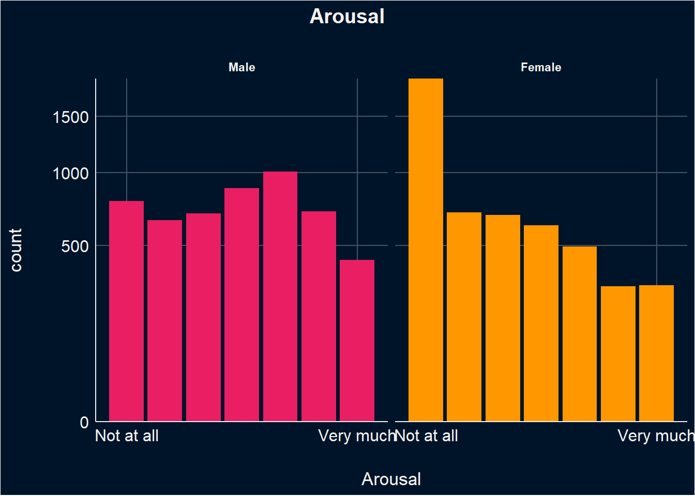

Code
library(tidyverse)
library(easystats)
library(patchwork)
library(ggside)
library(glmmTMB)
options(mc.cores = parallel::detectCores(),
brms.backend = "cmdstanr",
width = 300)library(tidyverse)
library(easystats)
library(patchwork)
library(ggside)
library(glmmTMB)
options(mc.cores = parallel::detectCores(),
brms.backend = "cmdstanr",
width = 300)dfsub <- read.csv("../data/data_participants.csv")
df <- read.csv("../data/data.csv") |>
right_join(
select(dfsub, Participant, Mobile, starts_with(c("Feedback_","BAIT")), COPS_Frequency, SexualActivity,- Feedback_Text),
by = "Participant"
) |>
datawizard::rescale(select= c("Arousal", "Enticing", "Valence"), range=c(0, 6), to=c(0,1)) |>
datawizard::rescale(select= c("Realness"), range=c(-3,3), to=c(0,1)) |>
mutate(Condition = case_when(
Condition == "Fiction" ~ "AI-Generated",
Condition == "Reality" ~ "Photograph"
)) |>
mutate(Condition = fct_relevel(Condition, "Photograph", "AI-Generated"),
Gender = fct_relevel(Gender, "Male", "Female"),
SexualOrientation = fct_relevel(SexualOrientation, "Heterosexual", "Homosexual", "Bisexual"),
PornFrequency = as.numeric(as.factor(COPS_Frequency)),
SexualActivity_num = as.numeric(as.factor(SexualActivity)),
ConditionBelief = case_when(
Condition == "Photograph" & Realness > 0.5 ~ "True",
Condition == "AI-Generated" & Realness < 0.5 ~ "True",
.default = "False",
)) |>
rename(AllRealConfidence = "Feedback_AllRealConfidence",
AllFakeConfidence = "Feedback_AllFakeConfidence",
Enjoyment = "Feedback_Enjoyment"
)|>
mutate(across(starts_with("Feedback_"), as.factor)) |>
mutate(ConditionBelief = as.factor(ConditionBelief)) |>
mutate(StimuliType = case_when(
grepl("couple", Stimulus, ignore.case = TRUE) ~ "Couple",
TRUE ~ "Individual")) |>
mutate(StimuliType = fct_relevel(StimuliType, "Individual", "Couple"))
results_table <- function(model, effects="fixed", filter=NULL) {
if("marginaleffects" %in% class(model)) {
model |>
parameters::parameters() |>
as.data.frame() |>
select(-Parameter, -SE, -S, z=Statistic) |>
insight::format_table() |>
parameters::display()
} else {
display(parameters::parameters(model, effects=effects, keep=filter))
}
}df$BAIT_Videos <- (df$BAIT_VideosRealistic + (1 - df$BAIT_VideosIssues)) / 2
df$BAIT_Visual = (df$BAIT_ImagesRealistic + (1 - df$BAIT_ImagesIssues) + df$BAIT_ImitatingReality + df$BAIT_EnvironmentReal) / 4
df$BAIT_Text = (df$BAIT_TextRealistic + (1 - df$BAIT_TextIssues)) / 2
df$BAIT_Negative <- (df$BAIT_Worry + df$BAIT_Dangerous)/2
df$BAIT_Positive <- (df$BAIT_Exciting + df$BAIT_Benefit)/2This section is about selecting the best model. Notably, all the stimuli presented are of an erotic nature. Note that variables were rescaled to [0,1] when fitting the models and that the stimuli presented to participants was assigned according to their self-rated sexuality, making all stimuli relevant to participants.
To summarise, women rate stimuli on average significantly lower in arousal, enticiment and valence than men. There was no difference between heterosexual, homosexual, and bisexual individuals within each gender on subjective ratings.
In general, males exhibited greater variability in their arousal ratings, while females tended to provide more lower arousal ratings.
The pattern of arousal ratings for images that participants believed to be either AI-generated or photos (i.e., initially labeled as photos and later rated as photos, or initially labeled as AI and later rated as AI), as well as for images where participants disagreed with the original labels, was generally similar within genders. However, between genders, women tended to provide more low arousal ratings than men.
arousal <- df |>
ggplot(aes(x=Arousal, fill = Gender)) +
geom_bar() +
scale_y_sqrt(expand = c(0, 0)) +
scale_x_continuous(
breaks = c(0, 1),
labels = c("Not at all","Very much")) +
labs(title = "Arousal", ) +
facet_wrap(Gender~SexualOrientation) +
scale_fill_manual(values=c("Male"="#E91E63", "Female"="#FF9800"), guide="none") +
theme_abyss() +
theme(plot.title = element_text(hjust = 0.5, face="bold"))
arousal
df |>
mutate(ConditionBelief = as.factor(ConditionBelief)) |>
mutate(ConditionBelief = case_when(
ConditionBelief == "False" ~ "Not Believed",
ConditionBelief == "True" ~ "Believed",)) |>
ggplot(aes(x=Arousal, fill=Gender)) +
geom_bar(position = "identity") +
scale_x_continuous(
breaks = c(0, 1),
labels = c("Not at all","Very much")) +
facet_grid(Gender~ConditionBelief, scales="free_y") +
scale_color_manual(values=c("red", "white"), guide="none") +
scale_fill_manual(values=c("Male"="#E91E63", "Female"="#FF9800"), guide="none") +
# scale_y_sqrt(expand = c(0, 0)) +
labs(title = "Arousal Ratings for Images Based on Belief in Original Labels") +
theme_abyss() +
theme(plot.title = element_text(hjust = 0.5, face="bold"))
# Get a sense of Random Factors
m1 <- glmmTMB::glmmTMB(Arousal ~ Gender + (1|Participant), data=df)
m2 <- glmmTMB::glmmTMB(Arousal ~ Gender + (1|Participant) + (1|Stimulus ), data=df)
m3 <- glmmTMB::glmmTMB(Arousal ~ Gender + (1|Participant) + (1+Gender|Stimulus ), data=df)
m4 <- glmmTMB::glmmTMB(Arousal ~ Gender/SexualOrientation + (1|Participant), data=df)
m5 <- glmmTMB::glmmTMB(Arousal ~ Gender/SexualOrientation + (1|Participant) + (1|Stimulus ), data=df)
m6 <- glmmTMB::glmmTMB(Arousal ~ Gender/SexualOrientation + (1|Participant) + (1+Gender|Stimulus ), data=df)
test_bf(m1,m2, m3, m4, m5,m6)
compare_performance(m1, m2, m3, m4, m5, m6)
# Model m3, which includes random intercepts for Participants and both random intercepts and slopes for Gender at the Stimulus level, seems to be the bestThis model evaluate ths the effects of Gender and Sexual Orientation on Arousal, accounting for random variability due to participants (i.e., random effects). The analysis revealed that on average women rate erotic stimuli significantly lower in arousal than men. There was no difference between heterosexual, homosexual, and bisexual individuals within each gender on arousal ratings.
m_a <- glmmTMB::glmmTMB(Arousal ~ Gender/ SexualOrientation + (1|Participant),
data=df, family=glmmTMB::ordbeta(),
control = glmmTMB::glmmTMBControl(parallel = 8))dropping columns from rank-deficient conditional model: GenderMale:SexualOrientationOther # control = glmmTMB::glmmTMBControl(optimizer=stats::optim, # nlminb, optim
# optArgs = list(method = "BFGS"), #Nelder-Mead, BFGS, CG
# parallel = 8))
results_table(m_a)Model matrix is rank deficient. Parameters `GenderMale:SexualOrientationOther` were not estimable.| Parameter | Coefficient | SE | 95% CI | z | p |
|---|---|---|---|---|---|
| (Intercept) | 0.02 | 0.06 | (-0.10, 0.14) | 0.35 | 0.725 |
| Gender (Female) | -0.55 | 0.09 | (-0.73, -0.38) | -6.14 | < .001 |
| Gender (Male) × SexualOrientationHomosexual | -0.02 | 0.28 | (-0.57, 0.53) | -0.06 | 0.951 |
| Gender (Female) × SexualOrientationHomosexual | 0.18 | 0.39 | (-0.59, 0.95) | 0.45 | 0.653 |
| Gender (Male) × SexualOrientationBisexual | -0.05 | 0.25 | (-0.53, 0.43) | -0.19 | 0.849 |
| Gender (Female) × SexualOrientationBisexual | 0.26 | 0.18 | (-0.10, 0.61) | 1.41 | 0.158 |
| Gender (Female) × SexualOrientationOther | -1.37 | 0.70 | (-2.75, 7.58e-03) | -1.95 | 0.051 |
estimate_relation(m_a) |>
ggplot(aes(x=Gender, y=Predicted)) +
geom_pointrange(aes(ymin=CI_low, ymax=CI_high, color = Gender), position=position_dodge(width=0.5)) +
scale_color_manual(values=c("Male"="#E91E63", "Female"="#FF9800"), guide="none") + labs(y="Arousal") +
facet_wrap(~SexualOrientation) +
theme_abyss()
In general, males tended to rate images higher in enticement more often than females.
Enticing ratings for images where participants believed in the original labels, as well as for those where they disagreed with the labels, were similar for within genders, with males providing higher ratings of enticement.
For females, although a similar pattern was observed, they tended to provide more lower enticement ratings, particularly for images where they disagreed with the original labels.
enticiment <- df |>
ggplot(aes(x=Enticing, fill = Gender)) +
geom_bar() +
scale_y_sqrt(expand = c(0, 0)) +
scale_x_continuous(
breaks = c(0, 1),
labels = c("Not at all","Very much")) +
labs(title = "Enticement", ) +
facet_wrap(Gender~SexualOrientation) +
scale_fill_manual(values=c("Male"="#E91E63", "Female"="#FF9800"), guide="none") +
theme_abyss() +
theme(plot.title = element_text(hjust = 0.5, face="bold"))
enticiment
df |>
mutate(ConditionBelief = as.factor(ConditionBelief)) |>
mutate(ConditionBelief = case_when(
ConditionBelief == "False" ~ "Not Believed",
ConditionBelief == "True" ~ "Believed",)) |>
ggplot(aes(x=Enticing, fill=Gender)) +
geom_bar(position = "identity", binwidth = 0.5) +
scale_x_continuous(
breaks = c(0, 1),
labels = c("Not at all","Very much")) +
facet_grid(Gender~ConditionBelief, scales="free_y") +
scale_fill_manual(values=c("Female"="#E91E63", "Male"="#FF9800"), guide="none") +
# scale_y_sqrt(expand = c(0, 0)) +
labs(title = "Enticement Ratings for Images Based on Belief in Original Labels") +
theme_abyss() +
theme(plot.title = element_text(hjust = 0.5, face="bold"))Warning in geom_bar(position = "identity", binwidth = 0.5): Ignoring unknown parameters: `binwidth`
This model evaluate ths the effects of Gender on Enticement, accounting for random variability due to participants (i.e., random effects). The analysis revealed that on average women rate erotic stimuli significantly lower in enticiment than men. There was no difference between heterosexual, homosexual, and bisexual individuals within each gender on enticement ratings.
m_e <- glmmTMB::glmmTMB(Enticing ~ Gender/SexualOrientation + (1|Participant),
data=df,family=glmmTMB::ordbeta(),
control = glmmTMB::glmmTMBControl(parallel = 8))dropping columns from rank-deficient conditional model: GenderMale:SexualOrientationOther # control = glmmTMB::glmmTMBControl(optimizer=stats::optim, # nlminb, optim
# optArgs = list(method = "BFGS"), #Nelder-Mead, BFGS, CG
# parallel = 8))
results_table(m_e)Model matrix is rank deficient. Parameters `GenderMale:SexualOrientationOther` were not estimable.| Parameter | Coefficient | SE | 95% CI | z | p |
|---|---|---|---|---|---|
| (Intercept) | 0.23 | 0.05 | (0.13, 0.33) | 4.50 | < .001 |
| Gender (Female) | -0.44 | 0.08 | (-0.58, -0.29) | -5.81 | < .001 |
| Gender (Male) × SexualOrientationHomosexual | 0.10 | 0.24 | (-0.36, 0.57) | 0.43 | 0.670 |
| Gender (Female) × SexualOrientationHomosexual | 0.02 | 0.33 | (-0.63, 0.66) | 0.05 | 0.960 |
| Gender (Male) × SexualOrientationBisexual | 0.08 | 0.21 | (-0.33, 0.48) | 0.37 | 0.712 |
| Gender (Female) × SexualOrientationBisexual | 0.13 | 0.15 | (-0.17, 0.43) | 0.83 | 0.404 |
| Gender (Female) × SexualOrientationOther | -0.27 | 0.57 | (-1.39, 0.85) | -0.47 | 0.639 |
estimate_relation(m_e) |>
ggplot(aes(x=Gender, y=Predicted)) +
geom_pointrange(aes(ymin=CI_low, ymax=CI_high, color = Gender), position=position_dodge(width=0.5)) +
scale_color_manual(values=c("Male"="#E91E63", "Female"="#FF9800"), guide="none") +
facet_wrap(~SexualOrientation) +
labs(y="Enticement") +
theme_abyss()
In general, males tended to assign higher valence ratings to images more frequently. Females, on the other hand, showed higher frequencies of ratings in the middle and lower ranges of the valence scale.
The pattern of valence ratings for images, whether believed or not believed, was similar within genders, with ratings for believed images closely resembling those for non-believed images.
valence <- df |>
ggplot(aes(x=Valence, fill = Gender)) +
geom_bar() +
scale_y_sqrt(expand = c(0, 0)) +
scale_x_continuous(
breaks = c(0, 1),
labels = c("Unplesant","Pleasant")) +
scale_fill_manual(values=c("Male"="#E91E63", "Female"="#FF9800"), guide="none") +
labs(title = "Valence", ) +
facet_wrap(Gender~SexualOrientation) +
theme_abyss() +
theme(plot.title = element_text(hjust = 0.5, face="bold"))
valence
df |>
mutate(ConditionBelief = as.factor(ConditionBelief)) |>
mutate(ConditionBelief = case_when(
ConditionBelief == "False" ~ "Not Believed",
ConditionBelief == "True" ~ "Believed",)) |>
ggplot(aes(x=Valence, fill=Gender)) +
geom_bar(position = "identity", binwidth = 0.5) +
scale_x_continuous(
breaks = c(0, 1),
labels = c("Unplesant","Pleasant")) +
facet_grid(Gender~ConditionBelief, scales="free_y") +
scale_fill_manual(values=c("Female"="#E91E63", "Male"="#FF9800"), guide="none") +
# scale_y_sqrt(expand = c(0, 0)) +
labs(title = "Valence to Ratings for Images Based on Belief in Original Labels") +
theme_abyss() +
theme(plot.title = element_text(hjust = 0.5, face="bold"))Warning in geom_bar(position = "identity", binwidth = 0.5): Ignoring unknown parameters: `binwidth`
This model evaluate ths the effects of Gender on valence, accounting for random variability due to participants. The analysis revealed that on average women rate erotic stimuli significantly lower in valence than men. There was no difference between heterosexual, homosexual, and bisexual individuals within each gender on arousal ratings.
m_v <- glmmTMB::glmmTMB(Valence ~ Gender/SexualOrientation+ (1|Participant), family=glmmTMB::ordbeta(),
data=df,
control = glmmTMB::glmmTMBControl(parallel = 8))dropping columns from rank-deficient conditional model: GenderMale:SexualOrientationOther # control = glmmTMB::glmmTMBControl(optimizer=stats::optim, # nlminb, optim
# optArgs = list(method = "BFGS"), #Nelder-Mead, BFGS, CG
# parallel = 8))
results_table(m_v)Model matrix is rank deficient. Parameters `GenderMale:SexualOrientationOther` were not estimable.| Parameter | Coefficient | SE | 95% CI | z | p |
|---|---|---|---|---|---|
| (Intercept) | 0.35 | 0.05 | (0.25, 0.44) | 7.26 | < .001 |
| Gender (Female) | -0.32 | 0.07 | (-0.46, -0.18) | -4.55 | < .001 |
| Gender (Male) × SexualOrientationHomosexual | -0.05 | 0.22 | (-0.48, 0.39) | -0.20 | 0.838 |
| Gender (Female) × SexualOrientationHomosexual | 0.08 | 0.31 | (-0.53, 0.68) | 0.25 | 0.806 |
| Gender (Male) × SexualOrientationBisexual | 0.21 | 0.19 | (-0.16, 0.59) | 1.12 | 0.264 |
| Gender (Female) × SexualOrientationBisexual | 0.22 | 0.14 | (-0.05, 0.50) | 1.58 | 0.114 |
| Gender (Female) × SexualOrientationOther | 0.06 | 0.53 | (-0.98, 1.09) | 0.11 | 0.914 |
estimate_relation(m_v) |>
ggplot(aes(x=Gender, y=Predicted)) +
geom_pointrange(aes(ymin=CI_low, ymax=CI_high, color = Gender), position=position_dodge(width=0.5)) +
scale_color_manual(values=c("Male"="#E91E63", "Female"="#FF9800"), guide="none") + labs(y="Valence") +
facet_wrap(~SexualOrientation) +
theme_abyss()
df <- df |>
filter(SexualOrientation == "Heterosexual")Due to the low number of participants self-described as Bisexual (N= 24) and Homosexual (N= 9) the main analysis will focus solely on Heterosexual individuals.
Exploratory analysis will then evaluate the effect of sexual orientation on ratings.
Similar to study1 arousal ratings for some “AI-generated” are lower then when they are presented as real photos.
plot_descriptive <- function(df, target="Arousal") {
# By item
order <- df |>
mutate(.Item_Order = paste0(Gender, "_", Stimulus)) |>
summarize(mean = mean(.data[[target]], na.rm=TRUE), .by=c("Condition", ".Item_Order")) |>
arrange(.Item_Order, desc(Condition)) |>
mutate(diff = sign(mean - lag(mean)),
Relevance = str_extract(.Item_Order, "^[^_]+"),
.Item_Order = str_extract(.Item_Order, "(?<=_).+")) |>
filter(Condition == "Photograph") |>
arrange(diff, mean)
p1 <- df |>
mutate(.Item_Order = paste0(Gender, "_", Stimulus)) |>
group_by(.Item_Order, Condition) |>
ggdist::mean_qi(.data[[target]], .width=0.95) |>
mutate(Gender = fct_rev(str_extract(.Item_Order, "^[^_]+"))) |>
left_join(order[c(".Item_Order", "diff")], by=".Item_Order") |>
mutate(.Item_Order = fct_relevel(.Item_Order, intersect(order$.Item_Order, unique(.Item_Order)))) |>
# mutate(.average = mean(.data[[target]]), .by="Item") |>
# mutate(Item = fct_reorder(Item, .average)) |>
ggplot(aes(y = .Item_Order, x=.data[[target]])) +
geom_line(aes(color=as.factor(diff)), linewidth=1) +
geom_point(aes(color=Condition), size=2) +
# ggdist::stat_slabinterval(aes(fill=Condition, color=Condition),
# .width=0.95, normalize="xy", slab_alpha=0.5) +
# ggdist::stat_histinterval(aes(fill=Condition, color=Condition),
# .width=0.95, normalize="xy", slab_alpha=0.5) +
scale_color_manual(values=c("AI-Generated"="#2196F3", "Photograph"="#F44336", "1"="#F44336", "-1"="#2196F3"),
breaks = c('AI-Generated', 'Photograph')) +
# scale_fill_manual(values=c("AI-Generated"="#2196F3", "Photograph"="#F44336")) +
scale_y_discrete(labels = function(x) str_extract(x, "(?<=_).+")) +
theme_minimal() +
theme(panel.grid.minor.x = element_blank(),
# panel.grid.major.x = element_blank(),
panel.border = element_blank(),
axis.line.x = element_blank()) +
labs(title = paste0(target, " by Item"), color="Condition", y="Items") +
facet_wrap(~Gender, scales="free_y")
# By participant
p2 <- df |>
summarize(.average = mean(.data[[target]]),
.by=c("Gender", "Participant", "Condition")) |>
pivot_wider(names_from = Condition, values_from = .average) |>
mutate(.diff = Photograph - `AI-Generated`) |>
mutate(Participant = fct_reorder(Participant, .diff)) |>
ggplot(aes(x = .diff, y=Participant)) +
geom_bar(aes(fill=.diff), stat = "identity") +
scale_fill_gradient2(guide="none", low="red", high="red", mid="blue") +
labs(title = paste0(target, " by Participant")) +
facet_wrap(~Gender, ncol=2, scales="free_y") +
theme_minimal() +
theme(panel.grid.major.y = element_blank(),
panel.border = element_blank(),
axis.line.x = element_blank(),
axis.text.y = element_blank()) +
labs(title = paste0(target, " by Participant"), x="Difference (Photograph - AI-Generated)", y="Participants")
p1 / p2 + plot_layout(heights = c(2, 1))
}
# remove other
arousal_desc <- df |>
filter(Gender != "Other") |>
plot_descriptive("Arousal")
arousal_desc
This model examines the effect of Gender Sexual Orientation, stimuli type, and Condition on Arousal, accounting for random variability due to participants and items (i.e., random intercepts) and condition as random slope for participants.
Women rate photograph of individuals lower than males. Men show less arousal toward couple images (vs individual ones), regardless of condition. Women show greater arousal toward couple images than individual ones. Men show less arousal for AI-generated individual images compared to photographic individual images.
Looking at average slopes:
m_arousal <- glmmTMB::glmmTMB(Arousal ~ Gender/ Condition +
(Condition| Participant) + (1|Stimulus), family=glmmTMB::ordbeta(),
data=df, control = glmmTMB::glmmTMBControl(parallel = 8))
results_table(m_arousal)| Parameter | Coefficient | SE | 95% CI | z | p |
|---|---|---|---|---|---|
| (Intercept) | -0.26 | 0.10 | (-0.45, -0.06) | -2.60 | 0.009 |
| Gender (Female) | -0.17 | 0.11 | (-0.37, 0.04) | -1.58 | 0.114 |
| Gender (Male) × ConditionAI-Generated | -0.07 | 0.02 | (-0.11, -0.02) | -2.81 | 0.005 |
| Gender (Female) × ConditionAI-Generated | -0.05 | 0.03 | (-0.11, 2.73e-03) | -1.86 | 0.062 |
marginaleffects::avg_slopes(m_arousal, variables="Condition", by="Gender") |>
results_table()Warning: For this model type, `marginaleffects` only takes into account the uncertainty in fixed-effect parameters. This is often appropriate when `re.form=NA`, but may be surprising to users who set `re.form=NULL` (default) or to some other value. Call `options(marginaleffects_safe = FALSE)` to
silence this warning.
Warning: For this model type, `marginaleffects` only takes into account the uncertainty in fixed-effect parameters. This is often appropriate when `re.form=NA`, but may be surprising to users who set `re.form=NULL` (default) or to some other value. Call `options(marginaleffects_safe = FALSE)` to
silence this warning.| Comparison | Gender | Coefficient | z | p | 95% CI |
|---|---|---|---|---|---|
| AI-Generated - Photograph | Male | -0.01 | -2.83 | 0.005 | [-0.02, 0.00] |
| AI-Generated - Photograph | Female | -8.86e-03 | -1.62 | 0.105 | [-0.02, 0.00] |
m_arousal_st <- glmmTMB::glmmTMB(Arousal ~ Gender/ StimuliType/ Condition +
(Condition| Participant) + (1|Stimulus), family=glmmTMB::ordbeta(),
data=df, control = glmmTMB::glmmTMBControl(parallel = 8))
results_table(m_arousal_st)| Parameter | Coefficient | SE | 95% CI | z | p |
|---|---|---|---|---|---|
| (Intercept) | 0.20 | 0.11 | (-0.02, 0.43) | 1.77 | 0.076 |
| Gender (Female) | -1.14 | 0.16 | (-1.46, -0.82) | -6.95 | < .001 |
| Gender (Male) × StimuliTypeCouple | -0.42 | 0.13 | (-0.67, -0.17) | -3.32 | < .001 |
| Gender (Female) × StimuliTypeCouple | 0.57 | 0.13 | (0.32, 0.83) | 4.44 | < .001 |
| Gender (Male) × StimuliTypeIndividual × ConditionAI-Generated | -0.07 | 0.03 | (-0.13, -7.38e-03) | -2.21 | 0.027 |
| Gender (Female) × StimuliTypeIndividual × ConditionAI-Generated | -0.04 | 0.04 | (-0.12, 0.04) | -1.02 | 0.308 |
| Gender (Male) × StimuliTypeCouple × ConditionAI-Generated | -0.06 | 0.03 | (-0.13, -1.18e-03) | -2.00 | 0.046 |
| Gender (Female) × StimuliTypeCouple × ConditionAI-Generated | -0.06 | 0.04 | (-0.13, 8.38e-03) | -1.72 | 0.085 |
marginaleffects::avg_slopes(m_arousal_st, variables=c("Condition", "StimuliType"), by="Gender") |>
results_table()Warning: For this model type, `marginaleffects` only takes into account the uncertainty in fixed-effect parameters. This is often appropriate when `re.form=NA`, but may be surprising to users who set `re.form=NULL` (default) or to some other value. Call `options(marginaleffects_safe = FALSE)` to
silence this warning.
Warning: For this model type, `marginaleffects` only takes into account the uncertainty in fixed-effect parameters. This is often appropriate when `re.form=NA`, but may be surprising to users who set `re.form=NULL` (default) or to some other value. Call `options(marginaleffects_safe = FALSE)` to
silence this warning.| Comparison | Gender | Coefficient | z | p | 95% CI |
|---|---|---|---|---|---|
| AI-Generated - Photograph | Male | -0.01 | -2.82 | 0.005 | [-0.02, 0.00] |
| AI-Generated - Photograph | Female | -8.68e-03 | -1.58 | 0.113 | [-0.02, 0.00] |
| Couple - Individual | Male | -0.09 | -3.37 | < .001 | [-0.15, -0.04] |
| Couple - Individual | Female | 0.11 | 4.46 | < .001 | [ 0.06, 0.16] |
This model explores whether various factors such as attitudes towards AI, knowledge about AI, frequency of porn consumption, and sexual activity moderate the relationship between gender, image relevance (specifically AI-generated versus photographs), and arousal ratings.
The analysis revealed a significant interaction effect only for positive attitudes towards AI among females. Specifically, females with higher positive attitudes towards AI rated AI-generated images as more arousing, relative to when they viewed images labelled as photographs.
No other moderators showed statistically significant effects on arousal across the interactions of gender, condition (AI-generated vs Photograph), and the respective moderators.
We also examined whether feedback moderates the relationship between gender and condition on arousal. Findings suggest that feedback moderates this relationship only for men. Specifically, males who reported finding AI-generated images as less and more arousing had lower and higher, respectively, arousal ratings for those images.
Lastly, the interaction between sexual activity and condition on Arousal levels. The three-way interaction between gender, condition (AI-Generated), and sexual activity did not reach statistical significance for either males or females, suggesting that the relationship between the AI-Generated condition and arousal ratings does not significantly vary with sexual activity levels for either gender.
test_moderator <- function(df, outcome="Arousal", moderator="BAIT_Visual") {
f <- paste0(outcome, " ~ Gender / (Condition * ", moderator, ") + (Condition | Participant) + (1|Stimulus)")
r <- glmmTMB::glmmTMB(as.formula(f),
data = df,
family=glmmTMB::ordbeta(),
control = glmmTMB::glmmTMBControl(parallel = 8)) |>
parameters::parameters() |>
as.data.frame() |>
select(-df_error, -Effects, -Group, -Component, -SE)
r$Moderator <- moderator
r$Outcome <- outcome
insight::format_table(r[c(7, 8), ])
}
moderator_results <- data.frame()
for(m in c("BAIT_Visual", "BAIT_Text", "BAIT_ExpertAI", "BAIT_Positive", "BAIT_Negative", "PornFrequency", "SexualActivity_num")) {
moderator_results <- rbind(moderator_results,
test_moderator(df, "Arousal", m))
}
display(moderator_results)| Parameter | Coefficient | 95% CI | z | p | Moderator | Outcome |
|---|---|---|---|---|---|---|
| Gender [Male] × ConditionAI-Generated × BAIT Visual | 0.04 | [-0.01, 0.09] | 1.49 | 0.135 | BAIT_Visual | Arousal |
| Gender [Female] × ConditionAI-Generated × BAIT Visual | 0.02 | [-0.03, 0.07] | 0.74 | 0.460 | BAIT_Visual | Arousal |
| Gender [Male] × ConditionAI-Generated × BAIT Text | -0.02 | [-0.06, 0.02] | -1.12 | 0.261 | BAIT_Text | Arousal |
| Gender [Female] × ConditionAI-Generated × BAIT Text | 7.07e-03 | [-0.04, 0.05] | 0.31 | 0.759 | BAIT_Text | Arousal |
| Gender [Male] × ConditionAI-Generated × BAIT ExpertAI | 0.02 | [-0.01, 0.05] | 1.41 | 0.160 | BAIT_ExpertAI | Arousal |
| Gender [Female] × ConditionAI-Generated × BAIT ExpertAI | 0.04 | [ 0.00, 0.07] | 2.08 | 0.038 | BAIT_ExpertAI | Arousal |
| Gender [Male] × ConditionAI-Generated × BAIT Positive | 0.03 | [-0.01, 0.07] | 1.55 | 0.122 | BAIT_Positive | Arousal |
| Gender [Female] × ConditionAI-Generated × BAIT Positive | 0.06 | [ 0.02, 0.11] | 3.09 | 0.002 | BAIT_Positive | Arousal |
| Gender [Male] × ConditionAI-Generated × BAIT Negative | -0.03 | [-0.05, 0.00] | -2.14 | 0.032 | BAIT_Negative | Arousal |
| Gender [Female] × ConditionAI-Generated × BAIT Negative | -0.01 | [-0.05, 0.02] | -0.80 | 0.423 | BAIT_Negative | Arousal |
| Gender [Male] × ConditionAI-Generated × PornFrequency | 0.01 | [-0.01, 0.04] | 0.94 | 0.346 | PornFrequency | Arousal |
| Gender [Female] × ConditionAI-Generated × PornFrequency | 0.03 | [-0.01, 0.07] | 1.51 | 0.130 | PornFrequency | Arousal |
| Gender [Male] × ConditionAI-Generated × SexualActivity num | 6.06e-03 | [-0.02, 0.03] | 0.42 | 0.676 | SexualActivity_num | Arousal |
| Gender [Female] × ConditionAI-Generated × SexualActivity num | -0.02 | [-0.05, 0.02] | -0.93 | 0.351 | SexualActivity_num | Arousal |
feedback_results <- data.frame()
for(m in c("Feedback_NoFacesAttractive", "Feedback_SomeFacesAttractive",
"Feedback_AIMoreAttractive", "Feedback_AILessAttractive",
"Feedback_AIMoreArousing", "Feedback_AILessArousing",
"Feedback_DiffObvious", "Feedback_DiffNone",
"Feedback_LabelsIncorrect", "Feedback_LabelsReversed",
"Feedback_AllReal", "Feedback_AllFake",
"AllRealConfidence","AllFakeConfidence" ,
"Enjoyment")) {
feedback_results <- rbind(feedback_results,
test_moderator(df, "Arousal", m))
}Warning in finalizeTMB(TMBStruc, obj, fit, h, data.tmb.old): Model convergence problem; singular convergence (7). See vignette('troubleshooting'), help('diagnose')
Warning in finalizeTMB(TMBStruc, obj, fit, h, data.tmb.old): Model convergence problem; singular convergence (7). See vignette('troubleshooting'), help('diagnose')display(feedback_results)| Parameter | Coefficient | 95% CI | z | p | Moderator | Outcome |
|---|---|---|---|---|---|---|
| Gender [Male] × ConditionAI-Generated × Feedback NoFacesAttractiveTrue | 0.08 | [-0.18, 0.34] | 0.61 | 0.542 | Feedback_NoFacesAttractive | Arousal |
| Gender [Female] × ConditionAI-Generated × Feedback NoFacesAttractiveTrue | -0.25 | [-0.52, 0.02] | -1.85 | 0.065 | Feedback_NoFacesAttractive | Arousal |
| Gender [Male] × ConditionAI-Generated × Feedback SomeFacesAttractiveTrue | -0.05 | [-0.14, 0.04] | -1.11 | 0.266 | Feedback_SomeFacesAttractive | Arousal |
| Gender [Female] × ConditionAI-Generated × Feedback SomeFacesAttractiveTrue | 0.11 | [-0.01, 0.22] | 1.84 | 0.066 | Feedback_SomeFacesAttractive | Arousal |
| Gender [Male] × ConditionAI-Generated × Feedback AIMoreAttractiveTrue | 0.13 | [ 0.00, 0.26] | 1.99 | 0.047 | Feedback_AIMoreAttractive | Arousal |
| Gender [Female] × ConditionAI-Generated × Feedback AIMoreAttractiveTrue | 0.09 | [-0.05, 0.23] | 1.25 | 0.212 | Feedback_AIMoreAttractive | Arousal |
| Gender [Male] × ConditionAI-Generated × Feedback AILessAttractiveTrue | -0.19 | [-0.37, -0.02] | -2.13 | 0.033 | Feedback_AILessAttractive | Arousal |
| Gender [Female] × ConditionAI-Generated × Feedback AILessAttractiveTrue | 0.07 | [-0.13, 0.27] | 0.67 | 0.501 | Feedback_AILessAttractive | Arousal |
| Gender [Male] × ConditionAI-Generated × Feedback AIMoreArousingTrue | 0.06 | [-0.10, 0.22] | 0.76 | 0.447 | Feedback_AIMoreArousing | Arousal |
| Gender [Female] × ConditionAI-Generated × Feedback AIMoreArousingTrue | -0.10 | [-0.29, 0.09] | -1.04 | 0.298 | Feedback_AIMoreArousing | Arousal |
| Gender [Male] × ConditionAI-Generated × Feedback AILessArousingTrue | 0.03 | [-0.14, 0.19] | 0.32 | 0.749 | Feedback_AILessArousing | Arousal |
| Gender [Female] × ConditionAI-Generated × Feedback AILessArousingTrue | -0.10 | [-0.29, 0.09] | -1.00 | 0.318 | Feedback_AILessArousing | Arousal |
| Gender [Male] × ConditionAI-Generated × Feedback DiffObviousTrue | 0.02 | [-0.17, 0.21] | 0.22 | 0.827 | Feedback_DiffObvious | Arousal |
| Gender [Female] × ConditionAI-Generated × Feedback DiffObviousTrue | -0.13 | [-0.33, 0.06] | -1.34 | 0.180 | Feedback_DiffObvious | Arousal |
| Gender [Male] × ConditionAI-Generated × Feedback DiffNoneTrue | -9.36e-03 | [-0.10, 0.08] | -0.20 | 0.838 | Feedback_DiffNone | Arousal |
| Gender [Female] × ConditionAI-Generated × Feedback DiffNoneTrue | 0.10 | [-0.01, 0.21] | 1.82 | 0.069 | Feedback_DiffNone | Arousal |
| Gender [Male] × ConditionAI-Generated × Feedback LabelsIncorrectTrue | -0.08 | [-0.18, 0.03] | -1.41 | 0.157 | Feedback_LabelsIncorrect | Arousal |
| Gender [Female] × ConditionAI-Generated × Feedback LabelsIncorrectTrue | 0.07 | [-0.06, 0.20] | 1.10 | 0.271 | Feedback_LabelsIncorrect | Arousal |
| Gender [Male] × ConditionAI-Generated × Feedback LabelsReversedTrue | 0.09 | [-0.14, 0.32] | 0.77 | 0.442 | Feedback_LabelsReversed | Arousal |
| Gender [Female] × ConditionAI-Generated × Feedback LabelsReversedTrue | -0.08 | [-0.41, 0.25] | -0.47 | 0.638 | Feedback_LabelsReversed | Arousal |
| Gender [Male] × ConditionAI-Generated × Feedback AllRealTrue | 0.02 | [-0.08, 0.11] | 0.32 | 0.749 | Feedback_AllReal | Arousal |
| Gender [Female] × ConditionAI-Generated × Feedback AllRealTrue | 0.07 | [-0.05, 0.18] | 1.16 | 0.247 | Feedback_AllReal | Arousal |
| Gender [Male] × ConditionAI-Generated × Feedback AllFakeTrue | 0.12 | [-0.10, 0.35] | 1.10 | 0.271 | Feedback_AllFake | Arousal |
| Gender [Female] × ConditionAI-Generated × Feedback AllFakeTrue | -0.09 | [-0.38, 0.21] | -0.59 | 0.558 | Feedback_AllFake | Arousal |
| Gender [Male] × ConditionAI-Generated × AllRealConfidence | 0.01 | [-0.05, 0.07] | 0.39 | 0.695 | AllRealConfidence | Arousal |
| Gender [Female] × ConditionAI-Generated × AllRealConfidence | 0.02 | [-0.05, 0.09] | 0.53 | 0.594 | AllRealConfidence | Arousal |
| Gender [Male] × ConditionAI-Generated × AllFakeConfidence | 0.04 | [-0.23, 0.30] | 0.26 | 0.798 | AllFakeConfidence | Arousal |
| Gender [Female] × ConditionAI-Generated × AllFakeConfidence | -0.10 | [-0.48, 0.27] | -0.54 | 0.592 | AllFakeConfidence | Arousal |
| Gender [Male] × ConditionAI-Generated × Enjoyment | 0.02 | [-0.05, 0.09] | 0.62 | 0.538 | Enjoyment | Arousal |
| Gender [Female] × ConditionAI-Generated × Enjoyment | -5.68e-03 | [-0.07, 0.06] | -0.17 | 0.866 | Enjoyment | Arousal |
m <- glmmTMB::glmmTMB(Arousal ~ Gender / (Condition * SexualActivity_num) + (Condition | Participant) + (1|Stimulus),
data=filter(df, ConditionBelief == "True"),
family=glmmTMB::ordbeta(),
control = glmmTMB::glmmTMBControl(parallel = 8))
results_table(m)| Parameter | Coefficient | SE | 95% CI | z | p |
|---|---|---|---|---|---|
| (Intercept) | -0.18 | 0.16 | (-0.49, 0.14) | -1.11 | 0.266 |
| Gender (Female) | -0.25 | 0.23 | (-0.71, 0.20) | -1.09 | 0.274 |
| Gender (Male) × ConditionAI-Generated | -0.29 | 0.08 | (-0.44, -0.14) | -3.77 | < .001 |
| Gender (Female) × ConditionAI-Generated | -0.23 | 0.11 | (-0.44, -0.01) | -2.09 | 0.037 |
| Gender (Male) × SexualActivity num | -3.17e-03 | 0.04 | (-0.09, 0.08) | -0.07 | 0.941 |
| Gender (Female) × SexualActivity num | 0.02 | 0.05 | (-0.07, 0.11) | 0.44 | 0.663 |
| Gender (Male) × ConditionAI-Generated × SexualActivity num | 3.20e-03 | 0.02 | (-0.04, 0.05) | 0.14 | 0.889 |
| Gender (Female) × ConditionAI-Generated × SexualActivity num | 0.01 | 0.03 | (-0.04, 0.07) | 0.50 | 0.616 |
sex_act_plot<- estimate_relation(m, length=20) |>
ggplot(aes(x=SexualActivity_num, y=Predicted)) +
geom_ribbon(aes(ymin=CI_low, ymax=CI_high, fill=Condition), alpha=0.2) +
geom_line(aes(color=Condition)) +
facet_grid(~Gender)
sex_act_plot
m <- glmmTMB::glmmTMB(Arousal ~ Gender / StimuliType/Condition + (Condition|Participant) + (Condition|Stimulus),
data=filter(df, ConditionBelief == "True"),
family=glmmTMB::ordbeta(),
control = glmmTMB::glmmTMBControl(parallel = 8))
results_table(m)| Parameter | Coefficient | SE | 95% CI | z | p |
|---|---|---|---|---|---|
| (Intercept) | 0.31 | 0.12 | (0.08, 0.54) | 2.62 | 0.009 |
| Gender (Female) | -1.21 | 0.17 | (-1.55, -0.88) | -7.05 | < .001 |
| Gender (Male) × StimuliTypeCouple | -0.50 | 0.14 | (-0.77, -0.23) | -3.65 | < .001 |
| Gender (Female) × StimuliTypeCouple | 0.58 | 0.14 | (0.31, 0.86) | 4.12 | < .001 |
| Gender (Male) × StimuliTypeIndividual × ConditionAI-Generated | -0.30 | 0.05 | (-0.41, -0.20) | -5.59 | < .001 |
| Gender (Female) × StimuliTypeIndividual × ConditionAI-Generated | -0.10 | 0.07 | (-0.24, 0.03) | -1.49 | 0.136 |
| Gender (Male) × StimuliTypeCouple × ConditionAI-Generated | -0.26 | 0.06 | (-0.38, -0.15) | -4.49 | < .001 |
| Gender (Female) × StimuliTypeCouple × ConditionAI-Generated | -0.19 | 0.07 | (-0.32, -0.07) | -2.97 | 0.003 |
m <- glmmTMB::glmmTMB(Arousal ~ Gender / Condition + (Condition|Participant) + (Condition|Stimulus),
data=filter(df, ConditionBelief == "True"),
family=glmmTMB::ordbeta(),
control = glmmTMB::glmmTMBControl(parallel = 8))
results_table(m)| Parameter | Coefficient | SE | 95% CI | z | p |
|---|---|---|---|---|---|
| (Intercept) | -0.20 | 0.10 | (-0.40, 4.47e-04) | -1.96 | 0.051 |
| Gender (Female) | -0.16 | 0.11 | (-0.36, 0.05) | -1.49 | 0.137 |
| Gender (Male) × ConditionAI-Generated | -0.24 | 0.04 | (-0.32, -0.15) | -5.25 | < .001 |
| Gender (Female) × ConditionAI-Generated | -0.20 | 0.05 | (-0.30, -0.10) | -3.89 | < .001 |
moderator_believed <- data.frame()
for(m in c("BAIT_Visual", "BAIT_Text", "BAIT_ExpertAI",
"BAIT_Positive", "BAIT_Negative",
"PornFrequency", "SexualActivity",
"Feedback_DiffObvious", "Feedback_DiffNone",
"Feedback_AIMoreArousing", "Feedback_AILessArousing",
"Feedback_AIMoreAttractive", "Feedback_AILessAttractive",
"Feedback_LabelsIncorrect", "Feedback_LabelsReversed")) {
moderator_believed <- rbind(moderator_believed,
test_moderator(filter(df, ConditionBelief == "True"), "Arousal", m))
}
display(filter(moderator_believed, p < .1))| Parameter | Coefficient | 95% CI | z | p | Moderator | Outcome |
|---|---|---|---|---|---|---|
| Gender [Female] × ConditionAI-Generated × BAIT ExpertAI | 0.08 | [ 0.02, 0.13] | 2.71 | 0.007 | BAIT_ExpertAI | Arousal |
| Gender [Female] × ConditionAI-Generated × BAIT Positive | 0.08 | [ 0.02, 0.15] | 2.42 | 0.015 | BAIT_Positive | Arousal |
| Gender [Female] × ConditionAI-Generated × PornFrequency | 0.07 | [ 0.01, 0.13] | 2.37 | 0.018 | PornFrequency | Arousal |
| Gender [Female] × SexualActivitywithin the last 3 days | 0.47 | [ 0.03, 0.91] | 2.10 | 0.036 | SexualActivity | Arousal |
| Gender [Male] × ConditionAI-Generated × Feedback AIMoreArousingTrue | 0.29 | [ 0.05, 0.53] | 2.36 | 0.018 | Feedback_AIMoreArousing | Arousal |
| Gender [Female] × ConditionAI-Generated × Feedback AILessArousingTrue | -0.26 | [-0.57, 0.04] | -1.67 | 0.094 | Feedback_AILessArousing | Arousal |
Enticment ratings, for some images, differ by whether the images were preceeded by ‘photograph’ or by ‘AI-generated’.
enticement_desc <- plot_descriptive(df, "Enticing")
enticement_desc
This model examines how Gender, Stimuli Type and Condition influence enticement ratings, treating participant and items as random intercepts.
Women rated images as less enticing than men overall. They rated couple images as more enticing than individual images. Men, on the other hand, rated couple images as less enticing. Men also rated AI-generated images as significantly less enticing than photographs, both for images of individual and couple stimuli. In contrast, women did not significantly differentiate between AI and photographic images in terms of enticement.
Looking at the average slopes, both genders rate Ai-generated conditions lower in enticement, although this effect is only significant for men.
m_enticement <- glmmTMB::glmmTMB(Enticing ~ Gender / Condition +
(Condition | Participant) + (1|Stimulus),
data=df, family=glmmTMB::ordbeta(),
control = glmmTMB::glmmTMBControl(parallel = 8))
results_table(m_enticement)| Parameter | Coefficient | SE | 95% CI | z | p |
|---|---|---|---|---|---|
| (Intercept) | 0.05 | 0.08 | (-0.12, 0.21) | 0.56 | 0.577 |
| Gender (Female) | -0.08 | 0.09 | (-0.25, 0.09) | -0.97 | 0.333 |
| Gender (Male) × ConditionAI-Generated | -0.08 | 0.02 | (-0.13, -0.04) | -3.59 | < .001 |
| Gender (Female) × ConditionAI-Generated | -0.04 | 0.03 | (-0.09, 0.02) | -1.34 | 0.181 |
marginaleffects::avg_slopes(m_enticement, variables="Condition", by="Gender") |>
results_table()Warning: For this model type, `marginaleffects` only takes into account the uncertainty in fixed-effect parameters. This is often appropriate when `re.form=NA`, but may be surprising to users who set `re.form=NULL` (default) or to some other value. Call `options(marginaleffects_safe = FALSE)` to
silence this warning.
Warning: For this model type, `marginaleffects` only takes into account the uncertainty in fixed-effect parameters. This is often appropriate when `re.form=NA`, but may be surprising to users who set `re.form=NULL` (default) or to some other value. Call `options(marginaleffects_safe = FALSE)` to
silence this warning.| Comparison | Gender | Coefficient | z | p | 95% CI |
|---|---|---|---|---|---|
| AI-Generated - Photograph | Male | -0.02 | -3.58 | < .001 | [-0.03, -0.01] |
| AI-Generated - Photograph | Female | -7.58e-03 | -1.34 | 0.181 | [-0.02, 0.00] |
m_enticement_st <- glmmTMB::glmmTMB(Enticing ~ Gender / StimuliType/ Condition +
(Condition | Participant) + (1|Stimulus),
data=df, family=glmmTMB::ordbeta(),
control = glmmTMB::glmmTMBControl(parallel = 8))
results_table(m_enticement_st)| Parameter | Coefficient | SE | 95% CI | z | p |
|---|---|---|---|---|---|
| (Intercept) | 0.48 | 0.09 | (0.30, 0.66) | 5.13 | < .001 |
| Gender (Female) | -0.99 | 0.13 | (-1.26, -0.73) | -7.40 | < .001 |
| Gender (Male) × StimuliTypeCouple | -0.42 | 0.11 | (-0.62, -0.21) | -3.95 | < .001 |
| Gender (Female) × StimuliTypeCouple | 0.53 | 0.11 | (0.32, 0.74) | 4.99 | < .001 |
| Gender (Male) × StimuliTypeIndividual × ConditionAI-Generated | -0.09 | 0.03 | (-0.15, -0.03) | -3.01 | 0.003 |
| Gender (Female) × StimuliTypeIndividual × ConditionAI-Generated | -2.24e-03 | 0.04 | (-0.07, 0.07) | -0.06 | 0.951 |
| Gender (Male) × StimuliTypeCouple × ConditionAI-Generated | -0.08 | 0.03 | (-0.14, -0.01) | -2.44 | 0.015 |
| Gender (Female) × StimuliTypeCouple × ConditionAI-Generated | -0.06 | 0.03 | (-0.13, 3.24e-03) | -1.86 | 0.063 |
marginaleffects::avg_slopes(m_enticement_st, variables=c("Condition", "StimuliType"), by="Gender") |>
results_table()Warning: For this model type, `marginaleffects` only takes into account the uncertainty in fixed-effect parameters. This is often appropriate when `re.form=NA`, but may be surprising to users who set `re.form=NULL` (default) or to some other value. Call `options(marginaleffects_safe = FALSE)` to
silence this warning.
Warning: For this model type, `marginaleffects` only takes into account the uncertainty in fixed-effect parameters. This is often appropriate when `re.form=NA`, but may be surprising to users who set `re.form=NULL` (default) or to some other value. Call `options(marginaleffects_safe = FALSE)` to
silence this warning.| Comparison | Gender | Coefficient | z | p | 95% CI |
|---|---|---|---|---|---|
| AI-Generated - Photograph | Male | -0.02 | -3.57 | < .001 | [-0.03, -0.01] |
| AI-Generated - Photograph | Female | -7.13e-03 | -1.26 | 0.209 | [-0.02, 0.00] |
| Couple - Individual | Male | -0.09 | -3.96 | < .001 | [-0.14, -0.05] |
| Couple - Individual | Female | 0.11 | 4.86 | < .001 | [ 0.07, 0.15] |
We examined whether attitudes towards AI, porn frequency, and sexual activity moderated the relationship between the predictors (sex, relevance, condition) and enticement ratings. The results showed that enticing ratings for images labeled AI-generated were moderated by the feedback reporting attitudes towards AI, but this was only significant for women. Specifically, women who reported having more positive attitudes towards AI, rated these images higher in arousal compared to images labeled as photographs.
Looking at feedback as a moderator, the results showed that enticement ratings for images labelled as AI-Generated were moderated by the feedback that AI is less attractive for males, and that difference between the AI-Generated images and real photos is obvious for females. Specifically,
Lastly, the interaction between sexual activity and condition on enticement, suggests that enticement ratings do not significantly differ with sexual activity levels for either gender.
for(m in c("BAIT_Visual", "BAIT_Text", "BAIT_ExpertAI",
"BAIT_Positive", "BAIT_Negative",
"PornFrequency", "SexualActivity")) {
moderator_results <- rbind(moderator_results,
test_moderator(df, "Enticing", m))
}
display(filter(moderator_results, Outcome == "Enticing"))| Parameter | Coefficient | 95% CI | z | p | Moderator | Outcome |
|---|---|---|---|---|---|---|
| Gender [Male] × ConditionAI-Generated × BAIT Visual | 0.01 | [-0.04, 0.06] | 0.45 | 0.651 | BAIT_Visual | Enticing |
| Gender [Female] × ConditionAI-Generated × BAIT Visual | 0.02 | [-0.03, 0.07] | 0.82 | 0.412 | BAIT_Visual | Enticing |
| Gender [Male] × ConditionAI-Generated × BAIT Text | -0.01 | [-0.05, 0.03] | -0.69 | 0.492 | BAIT_Text | Enticing |
| Gender [Female] × ConditionAI-Generated × BAIT Text | 0.02 | [-0.02, 0.06] | 0.98 | 0.328 | BAIT_Text | Enticing |
| Gender [Male] × ConditionAI-Generated × BAIT ExpertAI | 0.02 | [-0.01, 0.05] | 1.09 | 0.276 | BAIT_ExpertAI | Enticing |
| Gender [Female] × ConditionAI-Generated × BAIT ExpertAI | 0.02 | [-0.02, 0.05] | 1.08 | 0.282 | BAIT_ExpertAI | Enticing |
| Gender [Male] × ConditionAI-Generated × BAIT Positive | 0.02 | [-0.02, 0.06] | 0.96 | 0.339 | BAIT_Positive | Enticing |
| Gender [Female] × ConditionAI-Generated × BAIT Positive | 0.05 | [ 0.02, 0.09] | 2.79 | 0.005 | BAIT_Positive | Enticing |
| Gender [Male] × ConditionAI-Generated × BAIT Negative | -0.04 | [-0.06, -0.01] | -3.04 | 0.002 | BAIT_Negative | Enticing |
| Gender [Female] × ConditionAI-Generated × BAIT Negative | -7.45e-03 | [-0.04, 0.02] | -0.47 | 0.636 | BAIT_Negative | Enticing |
| Gender [Male] × ConditionAI-Generated × PornFrequency | -6.40e-03 | [-0.03, 0.02] | -0.47 | 0.637 | PornFrequency | Enticing |
| Gender [Female] × ConditionAI-Generated × PornFrequency | 0.02 | [-0.02, 0.05] | 1.03 | 0.305 | PornFrequency | Enticing |
| Gender [Male] × SexualActivitywithin the last 3 days | 0.05 | [-0.24, 0.34] | 0.31 | 0.755 | SexualActivity | Enticing |
| Gender [Female] × SexualActivitywithin the last 3 days | 0.36 | [ 0.00, 0.73] | 1.96 | 0.050 | SexualActivity | Enticing |
for(m in c("Feedback_NoFacesAttractive", "Feedback_SomeFacesAttractive",
"Feedback_AIMoreAttractive", "Feedback_AILessAttractive",
"Feedback_AIMoreArousing", "Feedback_AILessArousing",
"Feedback_DiffObvious", "Feedback_DiffNone",
"Feedback_LabelsIncorrect", "Feedback_LabelsReversed",
"Feedback_AllReal", "Feedback_AllFake",
"AllRealConfidence","AllFakeConfidence" ,
"Enjoyment")) {
feedback_results <- rbind(feedback_results,
test_moderator(df, "Enticing", m))
}Warning in finalizeTMB(TMBStruc, obj, fit, h, data.tmb.old): Model convergence problem; singular convergence (7). See vignette('troubleshooting'), help('diagnose')display(filter(feedback_results, Outcome == "Enticing"))| Parameter | Coefficient | 95% CI | z | p | Moderator | Outcome |
|---|---|---|---|---|---|---|
| Gender [Male] × ConditionAI-Generated × Feedback NoFacesAttractiveTrue | 0.05 | [-0.21, 0.31] | 0.40 | 0.692 | Feedback_NoFacesAttractive | Enticing |
| Gender [Female] × ConditionAI-Generated × Feedback NoFacesAttractiveTrue | -0.05 | [-0.29, 0.19] | -0.39 | 0.694 | Feedback_NoFacesAttractive | Enticing |
| Gender [Male] × ConditionAI-Generated × Feedback SomeFacesAttractiveTrue | -0.02 | [-0.12, 0.07] | -0.49 | 0.624 | Feedback_SomeFacesAttractive | Enticing |
| Gender [Female] × ConditionAI-Generated × Feedback SomeFacesAttractiveTrue | 0.03 | [-0.08, 0.14] | 0.57 | 0.571 | Feedback_SomeFacesAttractive | Enticing |
| Gender [Male] × ConditionAI-Generated × Feedback AIMoreAttractiveTrue | 0.06 | [-0.07, 0.18] | 0.90 | 0.367 | Feedback_AIMoreAttractive | Enticing |
| Gender [Female] × ConditionAI-Generated × Feedback AIMoreAttractiveTrue | 0.02 | [-0.11, 0.16] | 0.36 | 0.715 | Feedback_AIMoreAttractive | Enticing |
| Gender [Male] × ConditionAI-Generated × Feedback AILessAttractiveTrue | -0.18 | [-0.36, 0.00] | -2.00 | 0.046 | Feedback_AILessAttractive | Enticing |
| Gender [Female] × ConditionAI-Generated × Feedback AILessAttractiveTrue | 0.03 | [-0.15, 0.22] | 0.36 | 0.719 | Feedback_AILessAttractive | Enticing |
| Gender [Male] × ConditionAI-Generated × Feedback AIMoreArousingTrue | 0.04 | [-0.11, 0.20] | 0.54 | 0.592 | Feedback_AIMoreArousing | Enticing |
| Gender [Female] × ConditionAI-Generated × Feedback AIMoreArousingTrue | -0.10 | [-0.27, 0.08] | -1.06 | 0.289 | Feedback_AIMoreArousing | Enticing |
| Gender [Male] × ConditionAI-Generated × Feedback AILessArousingTrue | -3.74e-04 | [-0.17, 0.17] | -4.30e-03 | 0.997 | Feedback_AILessArousing | Enticing |
| Gender [Female] × ConditionAI-Generated × Feedback AILessArousingTrue | -0.06 | [-0.23, 0.11] | -0.67 | 0.501 | Feedback_AILessArousing | Enticing |
| Gender [Male] × ConditionAI-Generated × Feedback DiffObviousTrue | -0.10 | [-0.29, 0.09] | -1.06 | 0.288 | Feedback_DiffObvious | Enticing |
| Gender [Female] × ConditionAI-Generated × Feedback DiffObviousTrue | -0.16 | [-0.34, 0.02] | -1.70 | 0.090 | Feedback_DiffObvious | Enticing |
| Gender [Male] × ConditionAI-Generated × Feedback DiffNoneTrue | 4.65e-03 | [-0.09, 0.09] | 0.10 | 0.920 | Feedback_DiffNone | Enticing |
| Gender [Female] × ConditionAI-Generated × Feedback DiffNoneTrue | 0.10 | [ 0.00, 0.20] | 1.95 | 0.052 | Feedback_DiffNone | Enticing |
| Gender [Male] × ConditionAI-Generated × Feedback LabelsIncorrectTrue | -0.06 | [-0.17, 0.05] | -1.13 | 0.259 | Feedback_LabelsIncorrect | Enticing |
| Gender [Female] × ConditionAI-Generated × Feedback LabelsIncorrectTrue | 0.01 | [-0.11, 0.13] | 0.20 | 0.838 | Feedback_LabelsIncorrect | Enticing |
| Gender [Male] × ConditionAI-Generated × Feedback LabelsReversedTrue | 0.10 | [-0.13, 0.34] | 0.86 | 0.389 | Feedback_LabelsReversed | Enticing |
| Gender [Female] × ConditionAI-Generated × Feedback LabelsReversedTrue | -0.10 | [-0.41, 0.20] | -0.66 | 0.507 | Feedback_LabelsReversed | Enticing |
| Gender [Male] × ConditionAI-Generated × Feedback AllRealTrue | 0.01 | [-0.08, 0.11] | 0.23 | 0.817 | Feedback_AllReal | Enticing |
| Gender [Female] × ConditionAI-Generated × Feedback AllRealTrue | 0.13 | [ 0.02, 0.24] | 2.31 | 0.021 | Feedback_AllReal | Enticing |
| Gender [Male] × ConditionAI-Generated × Feedback AllFakeTrue | 0.19 | [-0.03, 0.42] | 1.69 | 0.092 | Feedback_AllFake | Enticing |
| Gender [Female] × ConditionAI-Generated × Feedback AllFakeTrue | 0.03 | [-0.24, 0.30] | 0.19 | 0.851 | Feedback_AllFake | Enticing |
| Gender [Male] × ConditionAI-Generated × AllRealConfidence | -0.01 | [-0.07, 0.04] | -0.44 | 0.659 | AllRealConfidence | Enticing |
| Gender [Female] × ConditionAI-Generated × AllRealConfidence | 0.02 | [-0.05, 0.09] | 0.49 | 0.623 | AllRealConfidence | Enticing |
| Gender [Male] × ConditionAI-Generated × AllFakeConfidence | -5.32e-03 | [-0.29, 0.28] | -0.04 | 0.970 | AllFakeConfidence | Enticing |
| Gender [Female] × ConditionAI-Generated × AllFakeConfidence | 0.03 | [-0.31, 0.37] | 0.16 | 0.870 | AllFakeConfidence | Enticing |
| Gender [Male] × ConditionAI-Generated × Enjoyment | 0.03 | [-0.04, 0.09] | 0.73 | 0.465 | Enjoyment | Enticing |
| Gender [Female] × ConditionAI-Generated × Enjoyment | -7.70e-03 | [-0.06, 0.05] | -0.27 | 0.788 | Enjoyment | Enticing |
m <- glmmTMB::glmmTMB(Enticing ~ Gender / (Condition * SexualActivity_num) + (Condition | Participant) + (1|Stimulus),
data=filter(df, ConditionBelief == "True"),
family=glmmTMB::ordbeta(),
control = glmmTMB::glmmTMBControl(parallel = 8))
results_table(m)| Parameter | Coefficient | SE | 95% CI | z | p |
|---|---|---|---|---|---|
| (Intercept) | 0.13 | 0.13 | (-0.13, 0.40) | 0.99 | 0.322 |
| Gender (Female) | -0.18 | 0.19 | (-0.55, 0.20) | -0.93 | 0.353 |
| Gender (Male) × ConditionAI-Generated | -0.34 | 0.08 | (-0.50, -0.18) | -4.28 | < .001 |
| Gender (Female) × ConditionAI-Generated | -0.11 | 0.10 | (-0.31, 0.09) | -1.06 | 0.288 |
| Gender (Male) × SexualActivity num | 1.04e-03 | 0.04 | (-0.07, 0.07) | 0.03 | 0.977 |
| Gender (Female) × SexualActivity num | 0.02 | 0.04 | (-0.06, 0.10) | 0.53 | 0.597 |
| Gender (Male) × ConditionAI-Generated × SexualActivity num | 0.01 | 0.02 | (-0.04, 0.06) | 0.46 | 0.644 |
| Gender (Female) × ConditionAI-Generated × SexualActivity num | -9.28e-03 | 0.03 | (-0.06, 0.04) | -0.34 | 0.731 |
sex_act_plot_ent<- estimate_relation(m, length=20) |>
ggplot(aes(x=SexualActivity_num, y=Predicted)) +
geom_ribbon(aes(ymin=CI_low, ymax=CI_high, fill=Condition), alpha=0.2) +
geom_line(aes(color=Condition)) +
facet_grid(~Gender)
sex_act_plot_ent
m <- glmmTMB::glmmTMB(Enticing ~ Gender/ StimuliType/ Condition + (Condition| Participant) + (1|Stimulus),
data=filter(df, ConditionBelief == "True"),
family=glmmTMB::ordbeta(),
control = glmmTMB::glmmTMBControl(parallel = 8))
results_table(m)| Parameter | Coefficient | SE | 95% CI | z | p |
|---|---|---|---|---|---|
| (Intercept) | 0.61 | 0.09 | (0.42, 0.79) | 6.50 | < .001 |
| Gender (Female) | -1.05 | 0.13 | (-1.31, -0.78) | -7.79 | < .001 |
| Gender (Male) × StimuliTypeCouple | -0.50 | 0.11 | (-0.70, -0.29) | -4.70 | < .001 |
| Gender (Female) × StimuliTypeCouple | 0.48 | 0.11 | (0.27, 0.69) | 4.48 | < .001 |
| Gender (Male) × StimuliTypeIndividual × ConditionAI-Generated | -0.32 | 0.05 | (-0.42, -0.23) | -6.63 | < .001 |
| Gender (Female) × StimuliTypeIndividual × ConditionAI-Generated | -0.12 | 0.06 | (-0.23, -5.93e-03) | -2.06 | 0.039 |
| Gender (Male) × StimuliTypeCouple × ConditionAI-Generated | -0.31 | 0.05 | (-0.41, -0.21) | -6.02 | < .001 |
| Gender (Female) × StimuliTypeCouple × ConditionAI-Generated | -0.14 | 0.06 | (-0.25, -0.03) | -2.58 | 0.010 |
m <- glmmTMB::glmmTMB(Enticing ~ Gender / Condition + (Condition| Participant) + (1|Stimulus),
data=filter(df, ConditionBelief == "True"),
family=glmmTMB::ordbeta(),
control = glmmTMB::glmmTMBControl(parallel = 8))
results_table(m)| Parameter | Coefficient | SE | 95% CI | z | p |
|---|---|---|---|---|---|
| (Intercept) | 0.14 | 0.08 | (-0.03, 0.30) | 1.63 | 0.103 |
| Gender (Female) | -0.11 | 0.09 | (-0.28, 0.06) | -1.27 | 0.205 |
| Gender (Male) × ConditionAI-Generated | -0.31 | 0.04 | (-0.38, -0.23) | -7.92 | < .001 |
| Gender (Female) × ConditionAI-Generated | -0.14 | 0.04 | (-0.23, -0.06) | -3.22 | 0.001 |
for(m in c("BAIT_Visual", "BAIT_Text", "BAIT_ExpertAI",
"BAIT_Positive", "BAIT_Negative", "PornFrequency", "SexualActivity",
"Feedback_DiffObvious", "Feedback_DiffNone",
"Feedback_AIMoreArousing", "Feedback_AILessArousing",
"Feedback_AIMoreAttractive", "Feedback_AILessArousing",
"Feedback_LabelsIncorrect", "Feedback_LabelsReversed")) {
moderator_believed <- rbind(moderator_believed,
test_moderator(filter(df, ConditionBelief == "True"), "Enticing", m))
}
display(filter(moderator_believed, p < .1))| Parameter | Coefficient | 95% CI | z | p | Moderator | Outcome |
|---|---|---|---|---|---|---|
| Gender [Female] × ConditionAI-Generated × BAIT ExpertAI | 0.08 | [ 0.02, 0.13] | 2.71 | 0.007 | BAIT_ExpertAI | Arousal |
| Gender [Female] × ConditionAI-Generated × BAIT Positive | 0.08 | [ 0.02, 0.15] | 2.42 | 0.015 | BAIT_Positive | Arousal |
| Gender [Female] × ConditionAI-Generated × PornFrequency | 0.07 | [ 0.01, 0.13] | 2.37 | 0.018 | PornFrequency | Arousal |
| Gender [Female] × SexualActivitywithin the last 3 days | 0.47 | [ 0.03, 0.91] | 2.10 | 0.036 | SexualActivity | Arousal |
| Gender [Male] × ConditionAI-Generated × Feedback AIMoreArousingTrue | 0.29 | [ 0.05, 0.53] | 2.36 | 0.018 | Feedback_AIMoreArousing | Arousal |
| Gender [Female] × ConditionAI-Generated × Feedback AILessArousingTrue | -0.26 | [-0.57, 0.04] | -1.67 | 0.094 | Feedback_AILessArousing | Arousal |
| Gender [Female] × ConditionAI-Generated × BAIT Positive | 0.06 | [ 0.00, 0.13] | 1.99 | 0.047 | BAIT_Positive | Enticing |
| Gender [Female] × SexualActivitywithin the last 3 days | 0.39 | [ 0.03, 0.76] | 2.10 | 0.035 | SexualActivity | Enticing |
valence_desc <- plot_descriptive(df, "Valence")
valence_desc
This model examines the effect of Gender, Stimuli Type and Condition on Valence ratings, while accounting for random variability due to participants and items (i.e., random intercepts).
Women rated images overall as lower in valence than men did. They rated couple images as higher in valence than individual ones. Additionally, women rated AI-generated couple images as significantly lower in valence than photographic couple images. Men rated images of couples lower in valence and AI-images of individuals lower in valence comapred to real photos of individuals.
Looking at avergae slopes, both genders rate AI-generated images lower in valence, but this effect is only significant for males as well.
m_valence <- glmmTMB::glmmTMB(Valence ~ Gender/ Condition +
(Condition| Participant) + (1|Stimulus),
data=df, family=glmmTMB::ordbeta(),
control = glmmTMB::glmmTMBControl(parallel = 8))
results_table(m_valence)| Parameter | Coefficient | SE | 95% CI | z | p |
|---|---|---|---|---|---|
| (Intercept) | 0.20 | 0.07 | (0.07, 0.34) | 2.93 | 0.003 |
| Gender (Female) | -0.01 | 0.08 | (-0.16, 0.14) | -0.18 | 0.861 |
| Gender (Male) × ConditionAI-Generated | -0.05 | 0.02 | (-0.09, -0.01) | -2.47 | 0.014 |
| Gender (Female) × ConditionAI-Generated | -0.05 | 0.02 | (-0.10, -8.43e-03) | -2.33 | 0.020 |
marginaleffects::avg_slopes(m_valence, variables="Condition", by="Gender") |>
results_table()Warning: For this model type, `marginaleffects` only takes into account the uncertainty in fixed-effect parameters. This is often appropriate when `re.form=NA`, but may be surprising to users who set `re.form=NULL` (default) or to some other value. Call `options(marginaleffects_safe = FALSE)` to
silence this warning.
Warning: For this model type, `marginaleffects` only takes into account the uncertainty in fixed-effect parameters. This is often appropriate when `re.form=NA`, but may be surprising to users who set `re.form=NULL` (default) or to some other value. Call `options(marginaleffects_safe = FALSE)` to
silence this warning.| Comparison | Gender | Coefficient | z | p | 95% CI |
|---|---|---|---|---|---|
| AI-Generated - Photograph | Male | -0.01 | -2.50 | 0.012 | [-0.02, 0.00] |
| AI-Generated - Photograph | Female | -0.01 | -2.37 | 0.018 | [-0.02, 0.00] |
m_valence_st <- glmmTMB::glmmTMB(Valence ~ Gender / StimuliType/ Condition +
(Condition| Participant) + (1|Stimulus),
data=df, family=glmmTMB::ordbeta(),
control = glmmTMB::glmmTMBControl(parallel = 8))
results_table(m_valence_st)| Parameter | Coefficient | SE | 95% CI | z | p |
|---|---|---|---|---|---|
| (Intercept) | 0.53 | 0.07 | (0.39, 0.68) | 7.13 | < .001 |
| Gender (Female) | -0.75 | 0.11 | (-0.96, -0.54) | -6.93 | < .001 |
| Gender (Male) × StimuliTypeCouple | -0.29 | 0.08 | (-0.44, -0.13) | -3.68 | < .001 |
| Gender (Female) × StimuliTypeCouple | 0.49 | 0.08 | (0.34, 0.65) | 6.19 | < .001 |
| Gender (Male) × StimuliTypeIndividual × ConditionAI-Generated | -0.07 | 0.03 | (-0.13, -0.02) | -2.61 | 0.009 |
| Gender (Female) × StimuliTypeIndividual × ConditionAI-Generated | -0.02 | 0.03 | (-0.08, 0.04) | -0.62 | 0.537 |
| Gender (Male) × StimuliTypeCouple × ConditionAI-Generated | -0.03 | 0.03 | (-0.08, 0.03) | -1.05 | 0.293 |
| Gender (Female) × StimuliTypeCouple × ConditionAI-Generated | -0.08 | 0.03 | (-0.14, -0.02) | -2.72 | 0.006 |
marginaleffects::avg_slopes(m_valence_st, variables=c("Condition", "StimuliType"), by="Gender") |>
results_table()Warning: For this model type, `marginaleffects` only takes into account the uncertainty in fixed-effect parameters. This is often appropriate when `re.form=NA`, but may be surprising to users who set `re.form=NULL` (default) or to some other value. Call `options(marginaleffects_safe = FALSE)` to
silence this warning.
Warning: For this model type, `marginaleffects` only takes into account the uncertainty in fixed-effect parameters. This is often appropriate when `re.form=NA`, but may be surprising to users who set `re.form=NULL` (default) or to some other value. Call `options(marginaleffects_safe = FALSE)` to
silence this warning.| Comparison | Gender | Coefficient | z | p | 95% CI |
|---|---|---|---|---|---|
| AI-Generated - Photograph | Male | -0.01 | -2.50 | 0.012 | [-0.02, 0.00] |
| AI-Generated - Photograph | Female | -0.01 | -2.29 | 0.022 | [-0.02, 0.00] |
| Couple - Individual | Male | -0.06 | -3.51 | < .001 | [-0.10, -0.03] |
| Couple - Individual | Female | 0.11 | 6.06 | < .001 | [ 0.07, 0.14] |
Here we look at whether the relationship between gender and condition and valence is moderated by AI-attitudes, porn frequency, and sexual activity. The results showed that enticing ratings for images labeled AI-generated were moderated by the feedback reporting attitudes towards AI, but this was only significant for women. More specifically, females who have more positive and negative attitudes towards AI rated images labelled as AI-Generated significantly higher and lower in valence compared to images labelled as photographs.
Looking at feedback as a moderator, the results show that valence ratings for images labelled AI-Generated were moderted by the feedback that the difference between AI and Photos was obvious, but only for females.
for(m in c("BAIT_Visual", "BAIT_Text", "BAIT_ExpertAI",
"BAIT_Positive", "BAIT_Negative", "PornFrequency", "SexualActivity_num")) {
moderator_results <- rbind(moderator_results,
test_moderator(df, "Valence", m))
}
display(filter(moderator_results, Outcome == "Valence"))| Parameter | Coefficient | 95% CI | z | p | Moderator | Outcome |
|---|---|---|---|---|---|---|
| Gender [Male] × ConditionAI-Generated × BAIT Visual | 0.03 | [-0.02, 0.07] | 1.16 | 0.248 | BAIT_Visual | Valence |
| Gender [Female] × ConditionAI-Generated × BAIT Visual | 0.02 | [-0.02, 0.06] | 0.92 | 0.360 | BAIT_Visual | Valence |
| Gender [Male] × ConditionAI-Generated × BAIT Text | -6.29e-03 | [-0.04, 0.03] | -0.35 | 0.723 | BAIT_Text | Valence |
| Gender [Female] × ConditionAI-Generated × BAIT Text | 0.03 | [-0.01, 0.06] | 1.44 | 0.150 | BAIT_Text | Valence |
| Gender [Male] × ConditionAI-Generated × BAIT ExpertAI | 0.03 | [ 0.00, 0.06] | 2.31 | 0.021 | BAIT_ExpertAI | Valence |
| Gender [Female] × ConditionAI-Generated × BAIT ExpertAI | 0.02 | [-0.01, 0.05] | 1.13 | 0.260 | BAIT_ExpertAI | Valence |
| Gender [Male] × ConditionAI-Generated × BAIT Positive | 0.03 | [-0.01, 0.06] | 1.63 | 0.103 | BAIT_Positive | Valence |
| Gender [Female] × ConditionAI-Generated × BAIT Positive | 0.02 | [-0.01, 0.06] | 1.34 | 0.179 | BAIT_Positive | Valence |
| Gender [Male] × ConditionAI-Generated × BAIT Negative | -0.03 | [-0.06, -0.01] | -3.04 | 0.002 | BAIT_Negative | Valence |
| Gender [Female] × ConditionAI-Generated × BAIT Negative | -0.01 | [-0.04, 0.01] | -0.95 | 0.340 | BAIT_Negative | Valence |
| Gender [Male] × ConditionAI-Generated × PornFrequency | -8.54e-03 | [-0.03, 0.02] | -0.70 | 0.482 | PornFrequency | Valence |
| Gender [Female] × ConditionAI-Generated × PornFrequency | 0.01 | [-0.02, 0.04] | 0.69 | 0.487 | PornFrequency | Valence |
| Gender [Male] × ConditionAI-Generated × SexualActivity num | -5.90e-03 | [-0.03, 0.02] | -0.46 | 0.649 | SexualActivity_num | Valence |
| Gender [Female] × ConditionAI-Generated × SexualActivity num | -0.01 | [-0.04, 0.02] | -0.91 | 0.361 | SexualActivity_num | Valence |
for(m in c("Feedback_NoFacesAttractive", "Feedback_SomeFacesAttractive",
"Feedback_AIMoreAttractive", "Feedback_AILessAttractive",
"Feedback_AIMoreArousing", "Feedback_AILessArousing",
"Feedback_DiffObvious", "Feedback_DiffNone",
"Feedback_LabelsIncorrect", "Feedback_LabelsReversed",
"Feedback_AllReal", "Feedback_AllFake",
"AllRealConfidence","AllFakeConfidence" ,
"Enjoyment")) {
feedback_results <- rbind(feedback_results,
test_moderator(df, "Valence", m))
}Warning in finalizeTMB(TMBStruc, obj, fit, h, data.tmb.old): Model convergence problem; non-positive-definite Hessian matrix. See vignette('troubleshooting')Warning in finalizeTMB(TMBStruc, obj, fit, h, data.tmb.old): Model convergence problem; singular convergence (7). See vignette('troubleshooting'), help('diagnose')display(filter(feedback_results, Outcome == "Valence"))| Parameter | Coefficient | 95% CI | z | p | Moderator | Outcome |
|---|---|---|---|---|---|---|
| Gender [Male] × ConditionAI-Generated × Feedback NoFacesAttractiveTrue | 0.05 | [-0.18, 0.28] | 0.43 | 0.664 | Feedback_NoFacesAttractive | Valence |
| Gender [Female] × ConditionAI-Generated × Feedback NoFacesAttractiveTrue | 0.03 | [-0.16, 0.22] | 0.33 | 0.739 | Feedback_NoFacesAttractive | Valence |
| Gender [Male] × ConditionAI-Generated × Feedback SomeFacesAttractiveTrue | 0.01 | [-0.07, 0.10] | 0.31 | 0.757 | Feedback_SomeFacesAttractive | Valence |
| Gender [Female] × ConditionAI-Generated × Feedback SomeFacesAttractiveTrue | 0.09 | [-0.01, 0.18] | 1.74 | 0.083 | Feedback_SomeFacesAttractive | Valence |
| Gender [Male] × ConditionAI-Generated × Feedback AIMoreAttractiveTrue | 0.11 | [ 0.00, 0.23] | 1.96 | 0.050 | Feedback_AIMoreAttractive | Valence |
| Gender [Female] × ConditionAI-Generated × Feedback AIMoreAttractiveTrue | 0.08 | [-0.03, 0.20] | 1.43 | 0.154 | Feedback_AIMoreAttractive | Valence |
| Gender [Male] × ConditionAI-Generated × Feedback AILessAttractiveTrue | -0.10 | [-0.26, 0.06] | -1.21 | 0.228 | Feedback_AILessAttractive | Valence |
| Gender [Female] × ConditionAI-Generated × Feedback AILessAttractiveTrue | 0.08 | [-0.09, 0.24] | 0.90 | 0.369 | Feedback_AILessAttractive | Valence |
| Gender [Male] × ConditionAI-Generated × Feedback AIMoreArousingTrue | 0.02 | [-0.11, 0.16] | 0.32 | 0.746 | Feedback_AIMoreArousing | Valence |
| Gender [Female] × ConditionAI-Generated × Feedback AIMoreArousingTrue | -0.15 | [-0.31, 0.02] | -1.77 | 0.077 | Feedback_AIMoreArousing | Valence |
| Gender [Male] × ConditionAI-Generated × Feedback AILessArousingTrue | -7.29e-03 | [-0.16, 0.15] | -0.09 | 0.926 | Feedback_AILessArousing | Valence |
| Gender [Female] × ConditionAI-Generated × Feedback AILessArousingTrue | -0.08 | [-0.23, 0.06] | -1.12 | 0.264 | Feedback_AILessArousing | Valence |
| Gender [Male] × ConditionAI-Generated × Feedback DiffObviousTrue | 0.02 | [-0.15, 0.18] | 0.19 | 0.849 | Feedback_DiffObvious | Valence |
| Gender [Female] × ConditionAI-Generated × Feedback DiffObviousTrue | -0.23 | [-0.41, -0.06] | -2.61 | 0.009 | Feedback_DiffObvious | Valence |
| Gender [Male] × ConditionAI-Generated × Feedback DiffNoneTrue | -0.02 | [-0.10, 0.06] | -0.48 | 0.631 | Feedback_DiffNone | Valence |
| Gender [Female] × ConditionAI-Generated × Feedback DiffNoneTrue | 0.11 | [ 0.02, 0.20] | 2.37 | 0.018 | Feedback_DiffNone | Valence |
| Gender [Male] × ConditionAI-Generated × Feedback LabelsIncorrectTrue | -0.10 | [-0.19, 0.00] | -2.00 | 0.046 | Feedback_LabelsIncorrect | Valence |
| Gender [Female] × ConditionAI-Generated × Feedback LabelsIncorrectTrue | 0.03 | [-0.07, 0.14] | 0.64 | 0.520 | Feedback_LabelsIncorrect | Valence |
| Gender [Male] × ConditionAI-Generated × Feedback LabelsReversedTrue | 0.03 | [-0.18, 0.24] | 0.29 | 0.774 | Feedback_LabelsReversed | Valence |
| Gender [Female] × ConditionAI-Generated × Feedback LabelsReversedTrue | 0.12 | [-0.14, 0.37] | 0.91 | 0.362 | Feedback_LabelsReversed | Valence |
| Gender [Male] × ConditionAI-Generated × Feedback AllRealTrue | 0.05 | [-0.04, 0.13] | 1.10 | 0.272 | Feedback_AllReal | Valence |
| Gender [Female] × ConditionAI-Generated × Feedback AllRealTrue | 0.13 | [ 0.03, 0.22] | 2.63 | 0.009 | Feedback_AllReal | Valence |
| Gender [Male] × ConditionAI-Generated × Feedback AllFakeTrue | 0.17 | [-0.03, 0.37] | 1.67 | 0.095 | Feedback_AllFake | Valence |
| Gender [Female] × ConditionAI-Generated × Feedback AllFakeTrue | -0.18 | [-0.42, 0.05] | -1.54 | 0.123 | Feedback_AllFake | Valence |
| Gender [Male] × ConditionAI-Generated × AllRealConfidence | -0.03 | [-0.08, 0.03] | -1.01 | 0.310 | AllRealConfidence | Valence |
| Gender [Female] × ConditionAI-Generated × AllRealConfidence | 0.03 | [-0.04, 0.09] | 0.79 | 0.429 | AllRealConfidence | Valence |
| Gender [Male] × ConditionAI-Generated × AllFakeConfidence | 0.02 | [-0.27, 0.32] | 0.16 | 0.874 | AllFakeConfidence | Valence |
| Gender [Female] × ConditionAI-Generated × AllFakeConfidence | 0.11 | [-0.19, 0.42] | 0.73 | 0.467 | AllFakeConfidence | Valence |
| Gender [Male] × ConditionAI-Generated × Enjoyment | 0.02 | [-0.04, 0.08] | 0.71 | 0.480 | Enjoyment | Valence |
| Gender [Female] × ConditionAI-Generated × Enjoyment | 2.71e-03 | [-0.05, 0.05] | 0.11 | 0.912 | Enjoyment | Valence |
m <- glmmTMB::glmmTMB(Valence ~ Gender / StimuliType/ Condition + (Condition| Participant) + (1|Stimulus),
data=filter(df, ConditionBelief == "True"),
family=glmmTMB::ordbeta(),
control = glmmTMB::glmmTMBControl(parallel = 8))
results_table(m)| Parameter | Coefficient | SE | 95% CI | z | p |
|---|---|---|---|---|---|
| (Intercept) | 0.63 | 0.07 | (0.49, 0.78) | 8.61 | < .001 |
| Gender (Female) | -0.77 | 0.11 | (-0.98, -0.56) | -7.27 | < .001 |
| Gender (Male) × StimuliTypeCouple | -0.35 | 0.08 | (-0.51, -0.19) | -4.37 | < .001 |
| Gender (Female) × StimuliTypeCouple | 0.45 | 0.08 | (0.29, 0.61) | 5.41 | < .001 |
| Gender (Male) × StimuliTypeIndividual × ConditionAI-Generated | -0.28 | 0.05 | (-0.37, -0.19) | -6.09 | < .001 |
| Gender (Female) × StimuliTypeIndividual × ConditionAI-Generated | -0.20 | 0.05 | (-0.30, -0.09) | -3.79 | < .001 |
| Gender (Male) × StimuliTypeCouple × ConditionAI-Generated | -0.21 | 0.05 | (-0.31, -0.12) | -4.52 | < .001 |
| Gender (Female) × StimuliTypeCouple × ConditionAI-Generated | -0.19 | 0.05 | (-0.29, -0.09) | -3.65 | < .001 |
m <- glmmTMB::glmmTMB(Valence ~ Gender /Condition + (Condition| Participant) + (1|Stimulus),
data=filter(df, ConditionBelief == "True"),
family=glmmTMB::ordbeta(),
control = glmmTMB::glmmTMBControl(parallel = 8))
results_table(m)| Parameter | Coefficient | SE | 95% CI | z | p |
|---|---|---|---|---|---|
| (Intercept) | 0.27 | 0.07 | (0.14, 0.41) | 4.05 | < .001 |
| Gender (Female) | -0.02 | 0.07 | (-0.17, 0.12) | -0.30 | 0.768 |
| Gender (Male) × ConditionAI-Generated | -0.24 | 0.04 | (-0.31, -0.17) | -6.61 | < .001 |
| Gender (Female) × ConditionAI-Generated | -0.21 | 0.04 | (-0.29, -0.13) | -5.10 | < .001 |
for(m in c("BAIT_Visual", "BAIT_Text", "BAIT_ExpertAI",
"BAIT_Positive", "BAIT_Negative", "PornFrequency", "SexualActivity",
"Feedback_DiffObvious", "Feedback_DiffNone",
"Feedback_AIMoreArousing", "Feedback_AILessArousing",
"Feedback_AIMoreAttractive", "Feedback_AILessArousing",
"Feedback_LabelsIncorrect", "Feedback_LabelsReversed")) {
moderator_believed <- rbind(moderator_believed,
test_moderator(filter(df, ConditionBelief == "True"), "Valence", m))
}
(filter(moderator_believed, p < .1)) Parameter Coefficient 95% CI z p Moderator Outcome
82 Gender [Female] × ConditionAI-Generated × BAIT ExpertAI 0.08 [ 0.02, 0.13] 2.71 0.007 BAIT_ExpertAI Arousal
83 Gender [Female] × ConditionAI-Generated × BAIT Positive 0.08 [ 0.02, 0.15] 2.42 0.015 BAIT_Positive Arousal
85 Gender [Female] × ConditionAI-Generated × PornFrequency 0.07 [ 0.01, 0.13] 2.37 0.018 PornFrequency Arousal
86 Gender [Female] × SexualActivitywithin the last 3 days 0.47 [ 0.03, 0.91] 2.10 0.036 SexualActivity Arousal
79 Gender [Male] × ConditionAI-Generated × Feedback AIMoreArousingTrue 0.29 [ 0.05, 0.53] 2.36 0.018 Feedback_AIMoreArousing Arousal
810 Gender [Female] × ConditionAI-Generated × Feedback AILessArousingTrue -0.26 [-0.57, 0.04] -1.67 0.094 Feedback_AILessArousing Arousal
818 Gender [Female] × ConditionAI-Generated × BAIT Positive 0.06 [ 0.00, 0.13] 1.99 0.047 BAIT_Positive Enticing
821 Gender [Female] × SexualActivitywithin the last 3 days 0.39 [ 0.03, 0.76] 2.10 0.035 SexualActivity Enticing
835 Gender [Female] × ConditionAI-Generated × PornFrequency 0.05 [ 0.00, 0.10] 1.82 0.069 PornFrequency Valence
836 Gender [Female] × SexualActivitywithin the last 3 days 0.31 [ 0.01, 0.61] 2.00 0.046 SexualActivity Valence
837 Gender [Female] × ConditionAI-Generated × Feedback DiffObviousTrue -0.44 [-0.72, -0.16] -3.06 0.002 Feedback_DiffObvious Valence
838 Gender [Female] × ConditionAI-Generated × Feedback DiffNoneTrue 0.18 [ 0.02, 0.33] 2.26 0.024 Feedback_DiffNone Valence
739 Gender [Male] × ConditionAI-Generated × Feedback AIMoreArousingTrue 0.20 [-0.02, 0.42] 1.77 0.076 Feedback_AIMoreArousing Valence
839 Gender [Female] × ConditionAI-Generated × Feedback AIMoreArousingTrue -0.27 [-0.54, -0.01] -2.03 0.042 Feedback_AIMoreArousing ValenceHere we combined the data for arousal, valence and enticing into an emotionality factor.
pca <- principal_components(df[c("Valence", "Arousal", "Enticing")], n = 2)
pca# Loadings from Principal Component Analysis (no rotation)
Variable | PC1 | PC2 | Complexity
-------------------------------------
Valence | -0.89 | 0.45 | 1.48
Arousal | -0.91 | -0.37 | 1.32
Enticing | -0.95 | -0.07 | 1.01
The 2 principal components accounted for 94.75% of the total variance of the original data (PC1 = 83.39%, PC2 = 11.36%).df$Emotionality <- as.numeric(normalize(-predict(pca)$PC1))
emotionality <- df |>
mutate(Emotionality_Extreme = ifelse(Emotionality %in% c(0, 1), "Extreme", "Not extreme")) |>
ggplot(aes(x=Emotionality, fill = Gender)) +
geom_histogram(aes(color=Emotionality_Extreme), position = "identity", bins=20) +
facet_grid(~Gender, scales="free_y") +
scale_color_manual(values=c("red", "white"), guide="none") +
scale_fill_manual(values=c("Male"="#E91E63", "Female"="#FF9800"), guide="none") +
scale_y_sqrt(expand = c(0, 0)) +
labs(title = "Emotionality") +
theme_abyss() +
theme(plot.title = element_text(hjust = 0.5, face="bold"))
emotionality
emotionality_desc <- plot_descriptive(df, "Emotionality")
emotionality_desc
This model looks at the effect of Gender, StimuliType and Condition on Emotionality, accounting for random variability due to participants and items (i.e., random intercepts).
Females, compared to males, report significantly lower emotionality ratings for fotographs. Among males, couple stimuli are rated lower than individual stimuli.Among females, couple stimuli are rated higher than individual stimuli. For males, AI-generated individual stimuli are rated lower than human-generated ones. Females have lower ratings for AI-generated couple stimuli compared to AI-generated stimuli of individuals.
m_emotionality <- glmmTMB::glmmTMB(Emotionality ~ Gender/ Condition + (Condition| Participant) + (1|Stimulus),
data=df, family=glmmTMB::ordbeta(),
control = glmmTMB::glmmTMBControl(parallel = 8))
results_table(m_emotionality)| Parameter | Coefficient | SE | 95% CI | z | p |
|---|---|---|---|---|---|
| (Intercept) | -0.04 | 0.09 | (-0.22, 0.13) | -0.50 | 0.620 |
| Gender (Female) | -0.07 | 0.09 | (-0.25, 0.11) | -0.77 | 0.443 |
| Gender (Male) × ConditionAI-Generated | -0.08 | 0.02 | (-0.13, -0.03) | -3.33 | < .001 |
| Gender (Female) × ConditionAI-Generated | -0.05 | 0.03 | (-0.11, -2.44e-03) | -2.05 | 0.040 |
marginaleffects::avg_slopes(m_emotionality, variables="Condition", by="Gender", re.form=NA) |>
results_table()| Comparison | Gender | Coefficient | z | p | 95% CI |
|---|---|---|---|---|---|
| AI-Generated - Photograph | Male | -0.02 | -3.33 | < .001 | [-0.03, -0.01] |
| AI-Generated - Photograph | Female | -0.01 | -2.05 | 0.040 | [-0.03, 0.00] |
m_emotionality_st <- glmmTMB::glmmTMB(Emotionality ~ Gender /StimuliType/ Condition + (Condition| Participant) + (1|Stimulus),
data=df, family=glmmTMB::ordbeta(),
control = glmmTMB::glmmTMBControl(parallel = 8))
results_table(m_emotionality_st)| Parameter | Coefficient | SE | 95% CI | z | p |
|---|---|---|---|---|---|
| (Intercept) | 0.43 | 0.10 | (0.24, 0.63) | 4.37 | < .001 |
| Gender (Female) | -1.09 | 0.14 | (-1.36, -0.81) | -7.67 | < .001 |
| Gender (Male) × StimuliTypeCouple | -0.44 | 0.11 | (-0.66, -0.23) | -4.02 | < .001 |
| Gender (Female) × StimuliTypeCouple | 0.62 | 0.11 | (0.40, 0.84) | 5.59 | < .001 |
| Gender (Male) × StimuliTypeIndividual × ConditionAI-Generated | -0.10 | 0.03 | (-0.16, -0.04) | -3.33 | < .001 |
| Gender (Female) × StimuliTypeIndividual × ConditionAI-Generated | -0.01 | 0.04 | (-0.08, 0.06) | -0.32 | 0.749 |
| Gender (Male) × StimuliTypeCouple × ConditionAI-Generated | -0.06 | 0.03 | (-0.12, 2.88e-03) | -1.87 | 0.062 |
| Gender (Female) × StimuliTypeCouple × ConditionAI-Generated | -0.09 | 0.03 | (-0.16, -0.03) | -2.73 | 0.006 |
marginaleffects::avg_slopes(m_emotionality_st, variables=c("Condition", "StimuliType"), by="Gender", re.form=NA) |>
results_table()| Comparison | Gender | Coefficient | z | p | 95% CI |
|---|---|---|---|---|---|
| AI-Generated - Photograph | Male | -0.02 | -3.33 | < .001 | [-0.03, -0.01] |
| AI-Generated - Photograph | Female | -0.01 | -2.01 | 0.045 | [-0.02, 0.00] |
| Couple - Individual | Male | -0.10 | -3.90 | < .001 | [-0.16, -0.05] |
| Couple - Individual | Female | 0.14 | 5.40 | < .001 | [ 0.09, 0.19] |
Looking at AI-attitudes, porn frequency and sexual activity, and feedback as moderators, we can see that for males reporting higher expertise in AI led to an increase of emotionality ratings for images labelled as AI-Generated. Additionally, males who reported having more negative attitiudes towards AI, rated AI-Generated images lower in emotionality compared to fotographs. While for feamles, those with more positive AI attitudes rate AI-generated images higher in emotionality.
Looking at feedback as a moderator, the results show that for males who reported finidng AI-generated images as more attractive rated these images higher in emotionality.Conversely, males who reported finding AI-generated images as less attractive rated these images lower in emotionality.
for(m in c("BAIT_Visual", "BAIT_Text", "BAIT_ExpertAI",
"BAIT_Positive", "BAIT_Negative", "PornFrequency", "SexualActivity_num")) {
moderator_results <- rbind(moderator_results,
test_moderator(df, "Emotionality", m))
}
display(filter(moderator_results, Outcome == "Emotionality"))| Parameter | Coefficient | 95% CI | z | p | Moderator | Outcome |
|---|---|---|---|---|---|---|
| Gender [Male] × ConditionAI-Generated × BAIT Visual | 0.03 | [-0.02, 0.08] | 1.14 | 0.256 | BAIT_Visual | Emotionality |
| Gender [Female] × ConditionAI-Generated × BAIT Visual | 0.04 | [-0.01, 0.08] | 1.40 | 0.161 | BAIT_Visual | Emotionality |
| Gender [Male] × ConditionAI-Generated × BAIT Text | -6.24e-03 | [-0.05, 0.03] | -0.31 | 0.758 | BAIT_Text | Emotionality |
| Gender [Female] × ConditionAI-Generated × BAIT Text | 0.03 | [-0.01, 0.08] | 1.58 | 0.113 | BAIT_Text | Emotionality |
| Gender [Male] × ConditionAI-Generated × BAIT ExpertAI | 0.03 | [0.00, 0.06] | 2.05 | 0.041 | BAIT_ExpertAI | Emotionality |
| Gender [Female] × ConditionAI-Generated × BAIT ExpertAI | 0.03 | [0.00, 0.07] | 2.01 | 0.044 | BAIT_ExpertAI | Emotionality |
| Gender [Male] × ConditionAI-Generated × BAIT Positive | 0.04 | [0.00, 0.08] | 2.09 | 0.037 | BAIT_Positive | Emotionality |
| Gender [Female] × ConditionAI-Generated × BAIT Positive | 0.06 | [0.02, 0.09] | 2.88 | 0.004 | BAIT_Positive | Emotionality |
| Gender [Male] × ConditionAI-Generated × BAIT Negative | -0.04 | [-0.07, -0.02] | -3.47 | < .001 | BAIT_Negative | Emotionality |
| Gender [Female] × ConditionAI-Generated × BAIT Negative | -0.02 | [-0.05, 0.01] | -1.20 | 0.229 | BAIT_Negative | Emotionality |
| Gender [Male] × ConditionAI-Generated × PornFrequency | -2.49e-03 | [-0.03, 0.02] | -0.18 | 0.858 | PornFrequency | Emotionality |
| Gender [Female] × ConditionAI-Generated × PornFrequency | 0.02 | [-0.01, 0.06] | 1.24 | 0.217 | PornFrequency | Emotionality |
| Gender [Male] × ConditionAI-Generated × SexualActivity num | -8.27e-03 | [-0.04, 0.02] | -0.55 | 0.581 | SexualActivity_num | Emotionality |
| Gender [Female] × ConditionAI-Generated × SexualActivity num | -0.02 | [-0.06, 0.01] | -1.31 | 0.189 | SexualActivity_num | Emotionality |
for(m in c("Feedback_NoFacesAttractive", "Feedback_SomeFacesAttractive",
"Feedback_AIMoreAttractive", "Feedback_AILessAttractive",
"Feedback_AIMoreArousing", "Feedback_AILessArousing",
"Feedback_DiffObvious", "Feedback_DiffNone",
"Feedback_LabelsIncorrect", "Feedback_LabelsReversed",
"Feedback_AllReal", "Feedback_AllFake",
"AllRealConfidence","AllFakeConfidence" ,
"Enjoyment")) {
feedback_results <- rbind(feedback_results,
test_moderator(df, "Emotionality", m))
}Warning in finalizeTMB(TMBStruc, obj, fit, h, data.tmb.old): Model convergence problem; non-positive-definite Hessian matrix. See vignette('troubleshooting')Warning in finalizeTMB(TMBStruc, obj, fit, h, data.tmb.old): Model convergence problem; singular convergence (7). See vignette('troubleshooting'), help('diagnose')display(filter(feedback_results, Outcome == "Emotionality"))| Parameter | Coefficient | 95% CI | z | p | Moderator | Outcome |
|---|---|---|---|---|---|---|
| Gender [Male] × ConditionAI-Generated × Feedback NoFacesAttractiveTrue | -9.04e-03 | [-0.27, 0.25] | -0.07 | 0.946 | Feedback_NoFacesAttractive | Emotionality |
| Gender [Female] × ConditionAI-Generated × Feedback NoFacesAttractiveTrue | -0.04 | [-0.26, 0.19] | -0.31 | 0.758 | Feedback_NoFacesAttractive | Emotionality |
| Gender [Male] × ConditionAI-Generated × Feedback SomeFacesAttractiveTrue | 1.83e-04 | [-0.10, 0.10] | 3.77e-03 | 0.997 | Feedback_SomeFacesAttractive | Emotionality |
| Gender [Female] × ConditionAI-Generated × Feedback SomeFacesAttractiveTrue | 0.10 | [-0.01, 0.21] | 1.71 | 0.087 | Feedback_SomeFacesAttractive | Emotionality |
| Gender [Male] × ConditionAI-Generated × Feedback AIMoreAttractiveTrue | 0.15 | [ 0.02, 0.28] | 2.25 | 0.025 | Feedback_AIMoreAttractive | Emotionality |
| Gender [Female] × ConditionAI-Generated × Feedback AIMoreAttractiveTrue | 0.12 | [-0.02, 0.25] | 1.73 | 0.083 | Feedback_AIMoreAttractive | Emotionality |
| Gender [Male] × ConditionAI-Generated × Feedback AILessAttractiveTrue | -0.20 | [-0.38, -0.01] | -2.09 | 0.037 | Feedback_AILessAttractive | Emotionality |
| Gender [Female] × ConditionAI-Generated × Feedback AILessAttractiveTrue | 0.07 | [-0.12, 0.25] | 0.69 | 0.490 | Feedback_AILessAttractive | Emotionality |
| Gender [Male] × ConditionAI-Generated × Feedback AIMoreArousingTrue | 0.02 | [-0.14, 0.18] | 0.28 | 0.782 | Feedback_AIMoreArousing | Emotionality |
| Gender [Female] × ConditionAI-Generated × Feedback AIMoreArousingTrue | -0.17 | [-0.36, 0.01] | -1.84 | 0.065 | Feedback_AIMoreArousing | Emotionality |
| Gender [Male] × ConditionAI-Generated × Feedback AILessArousingTrue | -0.05 | [-0.23, 0.13] | -0.56 | 0.578 | Feedback_AILessArousing | Emotionality |
| Gender [Female] × ConditionAI-Generated × Feedback AILessArousingTrue | -0.13 | [-0.30, 0.03] | -1.56 | 0.120 | Feedback_AILessArousing | Emotionality |
| Gender [Male] × ConditionAI-Generated × Feedback DiffObviousTrue | -0.05 | [-0.25, 0.15] | -0.50 | 0.617 | Feedback_DiffObvious | Emotionality |
| Gender [Female] × ConditionAI-Generated × Feedback DiffObviousTrue | -0.14 | [-0.34, 0.05] | -1.43 | 0.153 | Feedback_DiffObvious | Emotionality |
| Gender [Male] × ConditionAI-Generated × Feedback DiffNoneTrue | -0.01 | [-0.10, 0.08] | -0.25 | 0.802 | Feedback_DiffNone | Emotionality |
| Gender [Female] × ConditionAI-Generated × Feedback DiffNoneTrue | 0.11 | [ 0.01, 0.22] | 2.17 | 0.030 | Feedback_DiffNone | Emotionality |
| Gender [Male] × ConditionAI-Generated × Feedback LabelsIncorrectTrue | -0.10 | [-0.21, 0.01] | -1.79 | 0.073 | Feedback_LabelsIncorrect | Emotionality |
| Gender [Female] × ConditionAI-Generated × Feedback LabelsIncorrectTrue | -0.01 | [-0.13, 0.10] | -0.24 | 0.812 | Feedback_LabelsIncorrect | Emotionality |
| Gender [Male] × ConditionAI-Generated × Feedback LabelsReversedTrue | 0.05 | [-0.19, 0.29] | 0.41 | 0.679 | Feedback_LabelsReversed | Emotionality |
| Gender [Female] × ConditionAI-Generated × Feedback LabelsReversedTrue | 2.25e-03 | [-0.30, 0.30] | 0.01 | 0.988 | Feedback_LabelsReversed | Emotionality |
| Gender [Male] × ConditionAI-Generated × Feedback AllRealTrue | 0.03 | [-0.07, 0.13] | 0.56 | 0.578 | Feedback_AllReal | Emotionality |
| Gender [Female] × ConditionAI-Generated × Feedback AllRealTrue | 0.11 | [ 0.00, 0.22] | 1.94 | 0.052 | Feedback_AllReal | Emotionality |
| Gender [Male] × ConditionAI-Generated × Feedback AllFakeTrue | 0.20 | [-0.03, 0.44] | 1.73 | 0.084 | Feedback_AllFake | Emotionality |
| Gender [Female] × ConditionAI-Generated × Feedback AllFakeTrue | 7.26e-03 | [-0.26, 0.28] | 0.05 | 0.958 | Feedback_AllFake | Emotionality |
| Gender [Male] × ConditionAI-Generated × AllRealConfidence | -0.01 | [-0.07, 0.04] | -0.49 | 0.625 | AllRealConfidence | Emotionality |
| Gender [Female] × ConditionAI-Generated × AllRealConfidence | 7.10e-03 | [-0.06, 0.07] | 0.21 | 0.837 | AllRealConfidence | Emotionality |
| Gender [Male] × ConditionAI-Generated × AllFakeConfidence | -1.29e-03 | [-0.27, 0.27] | -9.41e-03 | 0.992 | AllFakeConfidence | Emotionality |
| Gender [Female] × ConditionAI-Generated × AllFakeConfidence | 0.09 | [-0.25, 0.43] | 0.53 | 0.598 | AllFakeConfidence | Emotionality |
| Gender [Male] × ConditionAI-Generated × Enjoyment | 0.04 | [-0.04, 0.11] | 0.97 | 0.330 | Enjoyment | Emotionality |
| Gender [Female] × ConditionAI-Generated × Enjoyment | 0.02 | [-0.04, 0.07] | 0.64 | 0.523 | Enjoyment | Emotionality |
m <- glmmTMB::glmmTMB(Emotionality ~ Gender/StimuliType/ Condition + (Condition| Participant) + (1|Stimulus),
data=filter(df, ConditionBelief == "True"),
family=glmmTMB::ordbeta(),
control = glmmTMB::glmmTMBControl(parallel = 8))
results_table(m)| Parameter | Coefficient | SE | 95% CI | z | p |
|---|---|---|---|---|---|
| (Intercept) | 0.56 | 0.10 | (0.37, 0.75) | 5.74 | < .001 |
| Gender (Female) | -1.14 | 0.14 | (-1.41, -0.86) | -8.05 | < .001 |
| Gender (Male) × StimuliTypeCouple | -0.51 | 0.11 | (-0.73, -0.30) | -4.63 | < .001 |
| Gender (Female) × StimuliTypeCouple | 0.58 | 0.11 | (0.36, 0.80) | 5.17 | < .001 |
| Gender (Male) × StimuliTypeIndividual × ConditionAI-Generated | -0.35 | 0.05 | (-0.45, -0.25) | -7.17 | < .001 |
| Gender (Female) × StimuliTypeIndividual × ConditionAI-Generated | -0.17 | 0.06 | (-0.28, -0.06) | -2.98 | 0.003 |
| Gender (Male) × StimuliTypeCouple × ConditionAI-Generated | -0.31 | 0.05 | (-0.41, -0.21) | -6.24 | < .001 |
| Gender (Female) × StimuliTypeCouple × ConditionAI-Generated | -0.22 | 0.05 | (-0.33, -0.11) | -4.03 | < .001 |
m <- glmmTMB::glmmTMB(Emotionality ~ Gender / Condition + (Condition| Participant) + (1|Stimulus),
data=filter(df, ConditionBelief == "True"),
family=glmmTMB::ordbeta(),
control = glmmTMB::glmmTMBControl(parallel = 8))
results_table(m)| Parameter | Coefficient | SE | 95% CI | z | p |
|---|---|---|---|---|---|
| (Intercept) | 0.05 | 0.09 | (-0.12, 0.23) | 0.57 | 0.571 |
| Gender (Female) | -0.08 | 0.09 | (-0.26, 0.09) | -0.93 | 0.350 |
| Gender (Male) × ConditionAI-Generated | -0.32 | 0.04 | (-0.40, -0.25) | -8.32 | < .001 |
| Gender (Female) × ConditionAI-Generated | -0.20 | 0.04 | (-0.29, -0.12) | -4.68 | < .001 |
for(m in c("BAIT_Visual", "BAIT_Text", "BAIT_ExpertAI",
"BAIT_Positive", "BAIT_Negative", "PornFrequency", "SexualActivity",
"Feedback_DiffObvious", "Feedback_DiffNone",
"Feedback_AIMoreArousing", "Feedback_AILessArousing",
"Feedback_AIMoreAttractive", "Feedback_AILessArousing",
"Feedback_LabelsIncorrect", "Feedback_LabelsReversed")) {
moderator_believed <- rbind(moderator_believed,
test_moderator(filter(df, ConditionBelief == "True"), "Emotionality", m))
}
(filter(moderator_believed, p < .1)) Parameter Coefficient 95% CI z p Moderator Outcome
82 Gender [Female] × ConditionAI-Generated × BAIT ExpertAI 0.08 [ 0.02, 0.13] 2.71 0.007 BAIT_ExpertAI Arousal
83 Gender [Female] × ConditionAI-Generated × BAIT Positive 0.08 [ 0.02, 0.15] 2.42 0.015 BAIT_Positive Arousal
85 Gender [Female] × ConditionAI-Generated × PornFrequency 0.07 [ 0.01, 0.13] 2.37 0.018 PornFrequency Arousal
86 Gender [Female] × SexualActivitywithin the last 3 days 0.47 [ 0.03, 0.91] 2.10 0.036 SexualActivity Arousal
79 Gender [Male] × ConditionAI-Generated × Feedback AIMoreArousingTrue 0.29 [ 0.05, 0.53] 2.36 0.018 Feedback_AIMoreArousing Arousal
810 Gender [Female] × ConditionAI-Generated × Feedback AILessArousingTrue -0.26 [-0.57, 0.04] -1.67 0.094 Feedback_AILessArousing Arousal
818 Gender [Female] × ConditionAI-Generated × BAIT Positive 0.06 [ 0.00, 0.13] 1.99 0.047 BAIT_Positive Enticing
821 Gender [Female] × SexualActivitywithin the last 3 days 0.39 [ 0.03, 0.76] 2.10 0.035 SexualActivity Enticing
835 Gender [Female] × ConditionAI-Generated × PornFrequency 0.05 [ 0.00, 0.10] 1.82 0.069 PornFrequency Valence
836 Gender [Female] × SexualActivitywithin the last 3 days 0.31 [ 0.01, 0.61] 2.00 0.046 SexualActivity Valence
837 Gender [Female] × ConditionAI-Generated × Feedback DiffObviousTrue -0.44 [-0.72, -0.16] -3.06 0.002 Feedback_DiffObvious Valence
838 Gender [Female] × ConditionAI-Generated × Feedback DiffNoneTrue 0.18 [ 0.02, 0.33] 2.26 0.024 Feedback_DiffNone Valence
739 Gender [Male] × ConditionAI-Generated × Feedback AIMoreArousingTrue 0.20 [-0.02, 0.42] 1.77 0.076 Feedback_AIMoreArousing Valence
839 Gender [Female] × ConditionAI-Generated × Feedback AIMoreArousingTrue -0.27 [-0.54, -0.01] -2.03 0.042 Feedback_AIMoreArousing Valence
847 Gender [Female] × ConditionAI-Generated × BAIT ExpertAI 0.05 [ 0.00, 0.10] 1.81 0.071 BAIT_ExpertAI Emotionality
848 Gender [Female] × ConditionAI-Generated × BAIT Positive 0.07 [ 0.00, 0.13] 2.06 0.039 BAIT_Positive Emotionality
850 Gender [Female] × ConditionAI-Generated × PornFrequency 0.06 [ 0.00, 0.12] 2.03 0.042 PornFrequency Emotionality
851 Gender [Female] × SexualActivitywithin the last 3 days 0.45 [ 0.07, 0.83] 2.30 0.021 SexualActivity Emotionality
853 Gender [Female] × ConditionAI-Generated × Feedback DiffNoneTrue 0.15 [-0.02, 0.31] 1.71 0.088 Feedback_DiffNone Emotionality
754 Gender [Male] × ConditionAI-Generated × Feedback AIMoreArousingTrue 0.22 [-0.02, 0.46] 1.77 0.076 Feedback_AIMoreArousing EmotionalityGender is a major predictor of arousal, enticement and valence, with females generally reporting lower ratings than males overall but not significantly.
Men significantly rate AI images as less arousing, enticing and valent than images presented as real photos.
Women rate images presented as AI-generated lower in valence than images presented as real photos.
Women prefer couple images (i.e.,significantly higher arousal, enticement and valence ratings); men prefer individual images (i.e.,significantly lower arousal, enticement and valence ratings).
AI-generation reduces arousal for men, especially for individual images. AI-generation has no significant effect on arousal for women, whether images are of individuals or couples.
Moderators
–>
pred1 <- rbind(
modelbased::estimate_means(m_arousal, by=c("Gender", "Condition"), backend = "emmeans") |>
as.data.frame() |>
mutate(Outcome="Arousal"),
modelbased::estimate_means(m_enticement, by=c("Gender", "Condition"), backend = "emmeans") |>
as.data.frame() |>
mutate(Outcome="Enticement"),
modelbased::estimate_means(m_valence, by=c("Gender","Condition"), backend = "emmeans") |>
as.data.frame() |>
mutate(Outcome="Valence")
)
# stars1a <- data.frame(label=c("**","***", "**", "***", "***", "***"),
# Gender=fct_relevel(c("Male", "Female", "Male", "Female", "Male", "Female"), "Male"),
# Outcome=c("Arousal","Arousal", "Enticement", "Enticement", "Valence", "Valence"),
# Condition=c("Photograph", "Photograph", "Photograph", "Photograph", "Photograph", "Photograph"),
# x=c(1.5, 1.5, 1.5, 1.5, 1.5, 1.5),
# y = c(0.53, 0.40, 0.6, 0.51, 0.62, 0.58))
# stars1b <- data.frame(label=c("*","**", "*","*"),
# Gender=fct_relevel(c("Male", "Male", "Male","Male"), "Male"),
# Outcome=c("Arousal", "Enticement", "Enticement","Valence"),
# x=c(1, 1, 2, 1),
# y=c(0.60, 0.65, 0.56, 0.68))
p1 <- pred1 |>
mutate(Gender = fct_relevel(Gender, "Male", "Female")) |>
ggplot(aes(x=Outcome, y=Proportion)) +
geom_hline(yintercept=0, color="darkgrey") +
geom_line(aes(group=Condition, color=Condition), position = position_dodge(width=0.2), alpha=0.8, linewidth=0.4, key_glyph = "path") +
geom_pointrange(aes(ymin = CI_low, ymax=CI_high, color=Condition), position = position_dodge(width=0.2), size=0.3) +
# geom_text(data=stars1a, aes(x=x, y=y, label=label), hjust=0.5, color="#424242", size=6) +
# geom_rect(data=data.frame(StimuliType = "Individual", Proportion=0.1, Gender=as.factor("Male"), Outcome="Arousal"),
# aes(xmin=0.8, xmax=1.2, ymin=0.35, ymax=0.7), color="#8BC34A", alpha=0, ) +
# geom_rect(data=data.frame(StimuliType = "Individual",Proportion=0.1, Gender=as.factor("Female"), Outcome="Arousal"),
# aes(xmin=0.8, xmax=1.2, ymin=0.2, ymax=0.5), color="#8BC34A", alpha=0) +
facet_grid(~Gender, switch="y", scales ="free") +
scale_y_continuous(limits=c(0, 1), labels=scales::percent) +
scale_color_manual(values=c("AI-Generated"="#2196F3", "Photograph"="#F44336")) +
theme_minimal() +
theme(axis.title.y = element_blank(),
axis.title.x = element_blank(),
axis.text.y = element_text(size = 8),
strip.placement = "outside",
strip.background.x = element_rect(fill=c("lightgrey"), color=NA),
strip.text.x = element_text(size = 10),
strip.text.y = element_text(size = 10),
axis.text.x = element_text(angle=25, hjust=1, vjust=1.1, size=9, color="black"),
legend.text = element_text(size = 10),
legend.position = ) +
labs(color="Images presented as:")
p1
m1 <- glmmTMB::glmmTMB(Arousal ~ Gender / Condition + (Condition | Participant) + (1|Stimulus),data = df,
family=glmmTMB::ordbeta(),
control = glmmTMB::glmmTMBControl(parallel = 8))
m2 <- glmmTMB::glmmTMB(Arousal ~ Gender / Condition + (Condition | Participant) + (1|Stimulus),
data=filter(df, ConditionBelief == "True"),
family=glmmTMB::ordbeta(),
control = glmmTMB::glmmTMBControl(parallel = 8))
m3 <- glmmTMB::glmmTMB(Arousal ~ Gender / Condition + (Condition | Participant) + (1|Stimulus),
data=filter(df, ConditionBelief == "True", Feedback_AILessAttractive=="True"),
family=glmmTMB::ordbeta(),
control = glmmTMB::glmmTMBControl(parallel = 8))
m4 <- glmmTMB::glmmTMB(Arousal ~ Gender / Condition + (Condition | Participant) + (1|Stimulus),
data=filter(df, ConditionBelief == "True", Feedback_AIMoreAttractive=="True"),
family=glmmTMB::ordbeta(),
control = glmmTMB::glmmTMBControl(parallel = 8))Warning in finalizeTMB(TMBStruc, obj, fit, h, data.tmb.old): Model convergence problem; singular convergence (7). See vignette('troubleshooting'), help('diagnose')stars2 <- data.frame(label=c("**", "***", "*", "***", "*", "*"),
Gender=fct_relevel(c("Male", "Male", "Male", "Female", "Male", "Male")),
Type=c("All trials", "Believed trials" ,"'AI was more attractive'", "Believed trials", "'AI was less attractive'", "'AI was less attractive'"),
y=c(0.52, 0.56, 0.66, 0.47, 0.39, 0.6))
pred2 <- rbind(
estimate_relation(m1) |>
mutate(Type = "All trials"),
estimate_relation(m2) |>
mutate(Type = "Believed trials"),
estimate_relation(m3) |>
mutate(Type = "'AI was less attractive'"),
estimate_relation(m4) |>
mutate(Type = "'AI was more attractive'"))
p2 <- pred2 |>
mutate(Type = fct_relevel(Type, "All trials", "Believed trials", "'AI was less attractive'", "'AI was more attractive'")) |>
ggplot(aes(x=Type, y=Predicted)) +
geom_hline(yintercept=0, color="darkgrey") +
geom_line(aes(group=Condition, color=Condition), position = position_dodge(width=0.2), alpha=0.8, linewidth=0.1) +
geom_bar(stat="identity", aes(fill=Condition), position = position_dodge(width=0.2), width=0.2, alpha=0.6) +
geom_pointrange(aes(ymin = CI_low, ymax=CI_high, color=Condition), position = position_dodge(width=0.2), size=0.2) +
geom_rect(data=data.frame(Type="All trials", Predicted=0.1, Gender=as.factor("Male")),
aes(xmin=0.7, xmax=1.3, ymin=0.35, ymax=0.55), color="#8BC34A", alpha=0) +
geom_rect(data=data.frame(Type="All trials", Predicted=0.1, Gender=as.factor("Female")),
aes(xmin=0.7, xmax=1.3, ymin=0.30, ymax=0.48), color="#8BC34A", alpha=0) +
geom_text(data=stars2, aes(y=y, label=label), hjust=0.5, size=3) +
facet_grid(~Gender) +
scale_y_continuous(labels=scales::percent) +
scale_color_manual(values=c("AI-Generated"="#2196F3", "Photograph"="#F44336")) +
scale_fill_manual(values=c("AI-Generated"="#2196F3", "Photograph"="#F44336")) +
labs(y="Arousal",
tag = "B") +
theme_minimal() +
theme(axis.title.x = element_blank(),
axis.text.x = element_text(angle=25, hjust=1, vjust=1.1, size=9),
axis.text.y = element_text(size = 8),
axis.title.y = element_text(size = 10),
strip.placement = "outside",
strip.background.x = element_rect(fill=c("lightgrey"), color=NA),
strip.text.x = element_text(size = 10),
legend.position = "none")
p2
dfsub$Gender <- as.factor(dfsub$Gender)
dfsub$Gender <- fct_relevel(dfsub$Gender, "Male", "Female")
dfsub$BAIT_Visual = (dfsub$BAIT_ImagesRealistic + (1 - dfsub$BAIT_ImagesIssues) + dfsub$BAIT_ImitatingReality + dfsub$BAIT_EnvironmentReal) / 4
m6 <- glm(Feedback_NoFacesAttractive ~ Gender / BAIT_Visual,
data=mutate(dfsub, Feedback_NoFacesAttractive = ifelse(Feedback_NoFacesAttractive =="True", 1, 0)),
family="binomial")
results_table(m6)| Parameter | Log-Odds | SE | 95% CI | z | p |
|---|---|---|---|---|---|
| (Intercept) | -1.98 | 1.36 | (-5.11, 0.36) | -1.46 | 0.144 |
| Gender (Female) | -0.51 | 1.63 | (-3.60, 2.99) | -0.31 | 0.753 |
| Gender (Male) × BAIT Visual | -0.57 | 0.52 | (-1.62, 0.48) | -1.09 | 0.278 |
| Gender (Female) × BAIT Visual | 8.94e-03 | 0.32 | (-0.58, 0.66) | 0.03 | 0.977 |
BAIT_Videos was calculated by averaging participants’ agreement with the statement that current AI algorithms can generate very realistic videos and the inverse of their agreement with the statement that videos generated by AI have obvious problems that make them easy to spot as fake. Higher scores reflect stronger beliefs in the visual realism and technical reliability of AI-generated videos.
BAIT_Visual was computed as the average of four items: belief that AI algorithms can generate very realistic images, the inverse of belief that AI-generated images always contain errors and artifacts, agreement that CGI can perfectly imitate reality, and belief that technology allows the creation of environments that seem just as real as reality. Higher scores capture stronger beliefs in the visual realism and immersive quality of AI-generated and computer-generated content.
BAIT_Text was calculated by averaging agreement with the belief that AI assistants can write texts indistinguishable from those written by humans and the inverse of the belief that AI-written documents usually read differently than human-written ones. Higher scores indicate stronger beliefs in the linguistic realism of AI-generated text.
BAIT_Negative was computed by averaging levels of agreement with the statements “AI is dangerous” and “I am worried about future uses of AI”.This composite reflects participants’ negative attitudes toward AI.
BAIT_Positive was calculated by averaging agreement with the statements “AI is exciting” and “Much of society will benefit from a future full of AI”. This score represents positive attitudes towards AI.